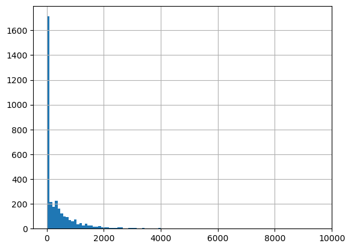
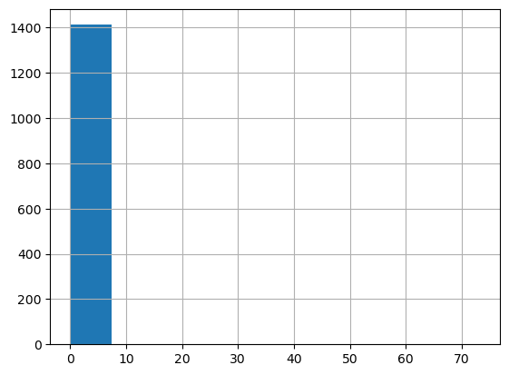
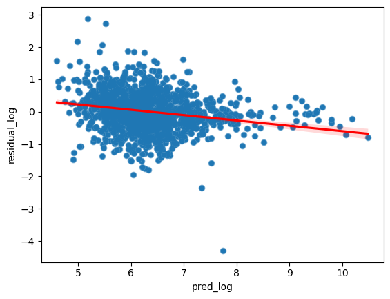
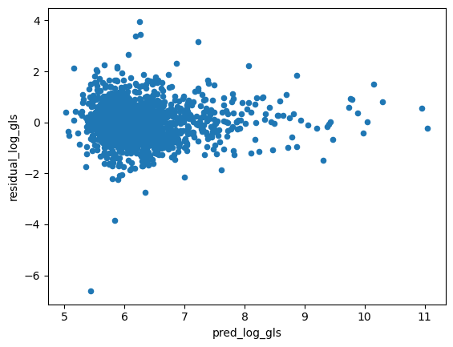

import pandas as pd
import numpy as np
import random
from ucimlrepo import fetch_ucirepo
import boto3
import json
from tqdm.auto import tqdm
import time
from sklearn.model_selection import train_test_split
from autogluon.tabular import TabularDataset, TabularPredictor
from sklearn.metrics import (
mean_squared_error, mean_absolute_error, r2_score, median_absolute_error,
accuracy_score, precision_score, recall_score, f1_score, confusion_matrix
)
from scipy.stats import pearsonr, spearmanr, wasserstein_distance
from statsmodels.stats.diagnostic import het_white
def calculate_regression_metrics(y_true, y_pred):
return {
'root_mean_squared_error': np.sqrt(mean_squared_error(y_true, y_pred)),
'mean_squared_error': mean_squared_error(y_true, y_pred),
'mean_absolute_error': mean_absolute_error(y_true, y_pred),
'r2': r2_score(y_true, y_pred),
'pearsonr': pearsonr(y_true, y_pred)[0],
'spearmanr': spearmanr(y_true, y_pred)[0],
'median_absolute_error': median_absolute_error(y_true, y_pred),
'earths_mover_distance': wasserstein_distance(y_true, y_pred)
}
def caluclate_classification_metrics(y_true, y_pred):
return {
'accuracy': accuracy_score(y_true, y_pred),
'precision': precision_score(y_true, y_pred, average='weighted'),
'recall': recall_score(y_true, y_pred, average='weighted'),
'f1_score': f1_score(y_true, y_pred, average='weighted'),
'confusion_matrix': confusion_matrix(y_true, y_pred)
}
def string_to_yearmon(date):
date = date.split()
date = date[0].split('/') + date[1].split(':')
date = date[2] + '-' + date[0].zfill(2) #+ '-' + date[1].zfill(2) + ' ' + date[3].zfill(2) + ':' + date[4].zfill(2)
return date
def call_llama(system_prompt, input):
template = f"""<s>[INST] <<SYS>>{system_prompt}<</SYS>>{input}[/INST]"""
client = boto3.client(service_name='bedrock-runtime',region_name='us-west-2')
body = json.dumps({
"prompt": template,
"temperature": 0.,
"top_p": 0.9,
"max_gen_len": 2048,
})
response = client.invoke_model(
body=body,
modelId='us.meta.llama3-2-90b-instruct-v1:0',
accept='application/json',
contentType='application/json'
)
response_body = json.loads(response['body'].read())
return response_body
def call_claude(system_prompt, input):
client = boto3.client(service_name='bedrock-runtime',region_name='us-west-2')
body=json.dumps(
{
"anthropic_version": "bedrock-2023-05-31",
"max_tokens": 2048,
"messages": [
{
"role": "user",
"content": [
{
"type": "text",
"text": system_prompt + '\n' + input,
}
]
}
]
}
)
response = client.invoke_model(body=body,
modelId='anthropic.claude-3-5-sonnet-20241022-v2:0',
contentType='application/json',
accept='application/json')
response_body = json.loads(response.get('body').read())
return response_body
from sklearn.preprocessing import StandardScaler
from statsmodels.stats.outliers_influence import variance_inflation_factor
from statsmodels.tools.tools import add_constant
class Winsorizer:
def __init__(self, cols, percentile=99):
self.cols = cols # List of columns to apply winsorization to
self.percentile = percentile # Percentile to define the outliers
self.lower_bounds = {} # To store the lower quantiles
self.upper_bounds = {} # To store the upper quantiles
def fit(self, df):
"""Fit the winsorizer to the data, remembering the quantiles."""
for col in self.cols:
lower = df[col].quantile(1 - self.percentile / 100)
upper = df[col].quantile(self.percentile / 100)
self.lower_bounds[col] = lower
self.upper_bounds[col] = upper
def transform(self, df):
"""Apply winsorization to a new DataFrame using the learned quantiles."""
for col in self.cols:
lower = self.lower_bounds[col]
upper = self.upper_bounds[col]
df[col] = np.clip(df[col], lower, upper)
return df
def fit_transform(self, df):
"""Fit the model and apply winsorization to the same DataFrame."""
self.fit(df)
return self.transform(df)
def calculate_vif(df, cols):
X = df[cols]
X_with_const = add_constant(X) # Add constant for VIF calculation
vif_data = pd.DataFrame()
vif_data['feature'] = X_with_const.columns
vif_data['VIF'] = [variance_inflation_factor(X_with_const.values, i) for i in range(X_with_const.shape[1])]
return vif_data
import seaborn as sns
import statsmodels.api as smPredict Zero-inflated and Long/fat-tailed Outcomes
This notebook details how to predict a real-number outcome that is zero-inflated and long/fat-tailed such as sales prediction in retail. We provide baseline regression, regression trained using winsorized outcome, regression trained on log(y+1) outcome, and hurdle regression with and without Duan’s method.
Import
Dataset
We use the UCI Online Retail dataset, which are transactions from a UK-based, non-store online retail from 2010-12-01 and 2011-12-09. We perform the following data processing:
- Remove transactions without
CustomerID; from 541,909 to 406,829 transactions - Filter out transactions where either
UnitPriceorQuantityis less than zero; from 406,829 to 397,884 transactions - Fill in missing product
Descriptionwith valueUNKNOWN.
online_retail = fetch_ucirepo(id=352)
transaction_df = online_retail['data']['original']
transaction_df.shape(541909, 8)#create yearmon for train-valid split
transaction_df['yearmon'] = transaction_df.InvoiceDate.map(string_to_yearmon)
#get rid of transactions without cid
transaction_df = transaction_df[~transaction_df.CustomerID.isna()].reset_index(drop=True)
#fill in unknown descriptions
transaction_df.Description = transaction_df.Description.fillna('UNKNOWN')
#convert customer id to string
transaction_df['CustomerID'] = transaction_df['CustomerID'].map(lambda x: str(int(x)))
transaction_df.shape(406829, 9)#check if still na
transaction_df.isna().mean()InvoiceNo 0.0
StockCode 0.0
Description 0.0
Quantity 0.0
InvoiceDate 0.0
UnitPrice 0.0
CustomerID 0.0
Country 0.0
yearmon 0.0
dtype: float64#simplify by filtering unit price and quantity to be non-zero (get rid of discounts, cancellations, etc)
transaction_df = transaction_df[(transaction_df.UnitPrice>0)&\
(transaction_df.Quantity>0)].reset_index(drop=True)
#add sales
transaction_df['Sales'] = transaction_df.UnitPrice * transaction_df.Quantity
transaction_df.shape(397884, 10)Problem Formulation and Outcome
We formulate the problem as predicting the sales (TargetSales) during Q4 2011 for each customers who bought at least one item during Q1-Q3 2011. Note that we are interested in predicting the actual sales number per customer as accurately as possible; this is common for marketing use cases such as determining what spend threshold to give each customer in a promotion, targeting customers for upselling, or detecting early signs of churns.
We transform the transaction dataset into a customer-level dataset where we calculate features using transactions between 2011-01 to 2011-09 and outcome using transactions between 2011-10 to 2011-12, summing Quantity times UnitPrice. We left-join the customers in feature set to outcome set. This will result in the zero-inflated nature of the outcome as not all customers will come back in Q4. The distribution of non-zero sales is naturally long/fat-tailed with a few customers having extraordinarily high amount of sales in Q4. This resulted in a customer-level dataset with 3,438 customers.
feature_period = {'start': '2011-01', 'end': '2011-09'}
outcome_period = {'start': '2011-10', 'end': '2011-12'}
feature_transaction = transaction_df[(transaction_df.yearmon>=feature_period['start'])&\
(transaction_df.yearmon<=feature_period['end'])]
outcome_transaction = transaction_df[(transaction_df.yearmon>=outcome_period['start'])&\
(transaction_df.yearmon<=outcome_period['end'])]
feature_transaction.shape, outcome_transaction.shape((240338, 10), (131389, 10))#aggregate sales during outcome period
outcome_sales = outcome_transaction.groupby('CustomerID').Sales.sum().reset_index()
outcome_sales| CustomerID | Sales | |
|---|---|---|
| 0 | 12347 | 1519.14 |
| 1 | 12349 | 1757.55 |
| 2 | 12352 | 311.73 |
| 3 | 12356 | 58.35 |
| 4 | 12357 | 6207.67 |
| ... | ... | ... |
| 2555 | 18276 | 335.86 |
| 2556 | 18277 | 110.38 |
| 2557 | 18282 | 77.84 |
| 2558 | 18283 | 974.21 |
| 2559 | 18287 | 1072.00 |
2560 rows × 2 columns
#aggregate sales during feature period
feature_sales = feature_transaction.groupby('CustomerID').Sales.sum().reset_index()
feature_sales| CustomerID | Sales | |
|---|---|---|
| 0 | 12346 | 77183.60 |
| 1 | 12347 | 2079.07 |
| 2 | 12348 | 904.44 |
| 3 | 12350 | 334.40 |
| 4 | 12352 | 2194.31 |
| ... | ... | ... |
| 3433 | 18280 | 180.60 |
| 3434 | 18281 | 80.82 |
| 3435 | 18282 | 100.21 |
| 3436 | 18283 | 1120.67 |
| 3437 | 18287 | 765.28 |
3438 rows × 2 columns
#merge to get TargetSales including those who spent during feature period but not during outcome (zeroes)
outcome_df = feature_sales[['CustomerID']].merge(outcome_sales, on='CustomerID', how='left')
outcome_df['Sales'] = outcome_df['Sales'].fillna(0)
outcome_df.columns = ['CustomerID', 'TargetSales']
outcome_df| CustomerID | TargetSales | |
|---|---|---|
| 0 | 12346 | 0.00 |
| 1 | 12347 | 1519.14 |
| 2 | 12348 | 0.00 |
| 3 | 12350 | 0.00 |
| 4 | 12352 | 311.73 |
| ... | ... | ... |
| 3433 | 18280 | 0.00 |
| 3434 | 18281 | 0.00 |
| 3435 | 18282 | 77.84 |
| 3436 | 18283 | 974.21 |
| 3437 | 18287 | 1072.00 |
3438 rows × 2 columns
#confirm zero-inflated, long/fat-tailed
outcome_df.TargetSales.describe(percentiles=[i/10 for i in range(10)])count 3438.000000
mean 666.245829
std 4016.843037
min 0.000000
0% 0.000000
10% 0.000000
20% 0.000000
30% 0.000000
40% 0.000000
50% 102.005000
60% 263.006000
70% 425.790000
80% 705.878000
90% 1273.611000
max 168469.600000
Name: TargetSales, dtype: float64#confirm zero-inflated, long/fat-tailed
outcome_df[outcome_df.TargetSales<=10_000].TargetSales.hist(bins=100)
Feature
We represent a customer using traditional RFM features namely recency of purchase, purchase days, total sales, number of distinct products purchased, number of distinct category purchased, customer tenure within 2011, average purchase frequency, average purchase value, and percentage of purchase across all 9 categories. This is based on data from Q1-Q3 2011.
Since the UCI Online Retail dataset does not have a category but only contains descriptions over 3,000 items, we use LLaMA 3.2 90B to infer categories based on randomly selected 1,000 descriptions. This is to make the category preference representation for each customer, which is more tractable than including features about all 3,000+ items. After that, we use the same model to label a category for each description. The categories are:
- Home Decor
- Kitchen and Dining
- Fashion Accessories
- Stationary and Gifts
- Toys and Games
- Seasonal and Holiday
- Personal Care and Wellness
- Outdoor and Garden
- Others
Classify Description into Category
feature_transaction.Description.nunique()3548Get Category
descriptions = feature_transaction.Description.unique().tolist()
print(descriptions[:5])
#randomize descriptions with seed 112 to get which categories we should use
np.random.seed(112)
random_descriptions = np.random.choice(descriptions, 1000, replace=False)
print(random_descriptions[:5])['JUMBO BAG PINK POLKADOT', 'BLUE POLKADOT WRAP', 'RED RETROSPOT WRAP ', 'RECYCLING BAG RETROSPOT ', 'RED RETROSPOT SHOPPER BAG']
['MODERN FLORAL STATIONERY SET' 'PURPLE BERTIE GLASS BEAD BAG CHARM'
'PARTY INVITES SPACEMAN' 'MONTANA DIAMOND CLUSTER EARRINGS'
'SKULLS DESIGN COTTON TOTE BAG']# res = call_llama(
# 'You are a product categorization assistant at a retail website.',
# 'Given the following product descriptions, come up with a few product categories they should be classified into.'+'\n'.join(random_descriptions)
# )
# print(res['generation'])# res# res = call_claude(
# 'You are a product categorization assistant at a retail website.',
# 'Given the following product descriptions, come up with a few product categories they should be classified into.'+'\n'.join(random_descriptions)
# )
# print(res['content'][0]['text'])# resLLaMA 3.2 90B Output:
<<SYS>>Based on the product descriptions, I would categorize them into the following categories:
1. Home Decor:
* Wall art
* Decorative items (e.g. vases, figurines, etc.)
* Lighting (e.g. candles, lanterns, etc.)
* Textiles (e.g. throw pillows, blankets, etc.)
2. Kitchen and Dining:
* Cookware and utensils
* Tableware (e.g. plates, cups, etc.)
* Kitchen decor (e.g. signs, magnets, etc.)
* Food and drink items (e.g. tea, coffee, etc.)
3. Fashion and Accessories:
* Jewelry (e.g. necklaces, earrings, etc.)
* Handbags and wallets
* Clothing and accessories (e.g. scarves, hats, etc.)
4. Stationery and Gifts:
* Cards and gift wrap
* Stationery (e.g. notebooks, pens, etc.)
* Gift items (e.g. mugs, keychains, etc.)
5. Toys and Games:
* Toys (e.g. stuffed animals, puzzles, etc.)
* Games and puzzles
6. Seasonal and Holiday:
* Christmas decorations and gifts
* Easter decorations and gifts
* Other seasonal items (e.g. Halloween, etc.)
7. Personal Care and Wellness:
* Beauty and personal care items (e.g. skincare, haircare, etc.)
* Wellness and self-care items (e.g. essential oils, etc.)
8. Outdoor and Garden:
* Garden decor and accessories
* Outdoor furniture and decor
* Gardening tools and supplies
Note that some products may fit into multiple categories, but I have assigned them to the one that seems most relevant.Claude 3.5 v2 Output
Based on these product descriptions, I would suggest the following main product categories:
1. Home Decor
- Candle holders
- Picture frames
- Wall art & signs
- Clocks
- Cushions & covers
- Storage items
- Decorative objects
2. Jewelry & Accessories
- Necklaces
- Bracelets
- Earrings
- Hair accessories
- Bag charms
- Key rings
3. Garden & Outdoor
- Plant pots
- Garden tools
- Outdoor decorations
- Bird houses
- Garden markers
4. Kitchen & Dining
- Tea sets
- Mugs
- Kitchen storage
- Cutlery
- Baking accessories
- Tea towels
5. Stationery & Paper Goods
- Notebooks
- Gift wrap
- Cards
- Paper decorations
- Writing sets
6. Party & Celebrations
- Party supplies
- Gift bags
- Christmas decorations
- Easter items
- Birthday items
7. Children's Items
- Toys
- Children's tableware
- School supplies
- Kids' accessories
8. Fashion Accessories
- Bags
- Purses
- Scarves
- Travel accessories
9. Bath & Beauty
- Bathroom accessories
- Toiletry bags
- Beauty items
10. Lighting
- Lamps
- String lights
- Tea lights
- Lanterns
These categories cover the main types of products in the list while providing logical groupings for customers to browse.categories = [
'Home Decor',
'Kitchen and Dining',
'Fashion Accessories',
'Stationary and Gifts',
'Toys and Games',
'Seasonal and Holiday',
'Personal Care and Wellness',
'Outdoor and Garden',
]
len(categories)8Annotate Category to Description
# #loop through descriptions in batches of batch_size
# res_texts = []
# batch_size = 100
# for i in tqdm(range(0, len(descriptions), batch_size)):
# batch = descriptions[i:i+batch_size]
# d = "\n".join(batch)
# inp = f'''Categorize the following product descriptions into {", ".join(categories)} or Others, if they do not fall into any.
# Only answer in the following format:
# "product description of product #1"|"product category classified into"
# "product description of product #2"|"product category classified into"
# ...
# "product description of product #n"|"product category classified into"
# Here are the product descriptions:
# {d}
# '''
# while True:
# res = call_claude('You are a product categorizer at a retail website', inp)
# # if res['generation_token_count'] > 1: #for llama
# if res['usage']['output_tokens'] > 1:
# break
# else:
# print('Retrying...')
# time.sleep(2)
# res_text = res['content'][0]['text'].strip().split('\n')
# #for llama
# # .replace('[SYS]','').replace('<<SYS>>','')\
# # .replace('[/SYS]','').replace('<</SYS>>','')\
# if res_text!='':
# res_texts.extend(res_text)# with open('../data/sales_prediction/product_description_category.csv','w') as f:
# f.write('"product_description"|"category"\n')
# for i in res_texts:
# f.write(f'{i}\n')product_description_category = pd.read_csv('../data/sales_prediction/product_description_category.csv',
sep='|')
#clean product_description
product_description_category['Description'] = descriptions
product_description_category.category.value_counts(normalize=True)category
Home Decor 0.328636
Kitchen and Dining 0.195885
Fashion Accessories 0.138670
Stationary and Gifts 0.116122
Seasonal and Holiday 0.087373
Personal Care and Wellness 0.047351
Toys and Games 0.045096
Outdoor and Garden 0.032976
Others 0.007892
Name: proportion, dtype: float64feature_transaction_cat = feature_transaction.merge(product_description_category,
how='inner',
on = 'Description',)
feature_transaction.shape, feature_transaction_cat.shape((240338, 10), (240338, 12))RFM
#convert invoice date to datetime
feature_transaction_cat['InvoiceDate'] = pd.to_datetime(feature_transaction_cat['InvoiceDate'])
# last date in feature set
current_date = feature_transaction_cat['InvoiceDate'].max()
#rfm
customer_features = feature_transaction_cat.groupby('CustomerID').agg({
'InvoiceDate': [
('recency', lambda x: (current_date - x.max()).days),
('first_purchase_date', 'min'),
('purchase_day', 'nunique'),
],
'InvoiceNo': [('nb_invoice', 'nunique')],
'Sales': [
('total_sales', 'sum')
],
'StockCode': [('nb_product', 'nunique')],
'category': [('nb_category', 'nunique')]
}).reset_index()
# Flatten column names
customer_features.columns = [
'CustomerID',
'recency',
'first_purchase_date',
'purchase_day',
'nb_invoice',
'total_sales',
'nb_product',
'nb_category'
]#almost always one purchase a day
(customer_features.purchase_day==customer_features.nb_invoice).mean()0.977021524141943customer_features['customer_lifetime'] = (current_date - customer_features['first_purchase_date']).dt.days
customer_features['avg_purchase_frequency'] = customer_features['customer_lifetime'] / customer_features['purchase_day']
customer_features['avg_purchase_value'] = customer_features['total_sales'] / customer_features['purchase_day']Category Preference
#category preference
category_sales = feature_transaction_cat.pivot_table(
values='Sales',
index='CustomerID',
columns='category',
aggfunc='sum',
fill_value=0
)
category_sales.columns = [i.lower().replace(' ','_') for i in category_sales.columns]
customer_features = customer_features.merge(category_sales, on='CustomerID', how='left')
total_sales = customer_features['total_sales']
for col in category_sales.columns:
percentage_col = f'per_{col}'
customer_features[percentage_col] = customer_features[col] / total_sales#make sure the categories are not too sparse
(customer_features.iloc[:,-9:]==0).mean()per_fashion_accessories 0.409831
per_home_decor 0.081734
per_kitchen_and_dining 0.122455
per_others 0.765561
per_outdoor_and_garden 0.507853
per_personal_care_and_wellness 0.448226
per_seasonal_and_holiday 0.369401
per_stationary_and_gifts 0.305410
per_toys_and_games 0.487202
dtype: float64Putting Them All Together
selected_features = [
'recency',
'purchase_day',
'total_sales',
'nb_product',
'nb_category',
'customer_lifetime',
'avg_purchase_frequency',
'avg_purchase_value',
'per_fashion_accessories',
'per_home_decor',
'per_kitchen_and_dining',
'per_others',
'per_outdoor_and_garden',
'per_personal_care_and_wellness',
'per_seasonal_and_holiday',
'per_stationary_and_gifts',
'per_toys_and_games']
outcome_variable = 'TargetSales'customer_features = customer_features[[ 'CustomerID']+selected_features]
customer_features.head()| CustomerID | recency | purchase_day | total_sales | nb_product | nb_category | customer_lifetime | avg_purchase_frequency | avg_purchase_value | per_fashion_accessories | per_home_decor | per_kitchen_and_dining | per_others | per_outdoor_and_garden | per_personal_care_and_wellness | per_seasonal_and_holiday | per_stationary_and_gifts | per_toys_and_games | |
|---|---|---|---|---|---|---|---|---|---|---|---|---|---|---|---|---|---|---|
| 0 | 12346 | 255 | 1 | 77183.60 | 1 | 1 | 255 | 255.000000 | 77183.600000 | 0.000000 | 0.000000 | 1.000000 | 0.000000 | 0.000000 | 0.000000 | 0.000000 | 0.000000 | 0.000000 |
| 1 | 12347 | 59 | 4 | 2079.07 | 65 | 7 | 247 | 61.750000 | 519.767500 | 0.145834 | 0.204168 | 0.294021 | 0.000000 | 0.005628 | 0.147614 | 0.000000 | 0.073013 | 0.129721 |
| 2 | 12348 | 5 | 3 | 904.44 | 10 | 4 | 248 | 82.666667 | 301.480000 | 0.000000 | 0.000000 | 0.000000 | 0.132679 | 0.000000 | 0.825970 | 0.018796 | 0.022555 | 0.000000 |
| 3 | 12350 | 239 | 1 | 334.40 | 17 | 7 | 239 | 239.000000 | 334.400000 | 0.240431 | 0.202751 | 0.116926 | 0.172548 | 0.000000 | 0.118421 | 0.000000 | 0.059211 | 0.089713 |
| 4 | 12352 | 2 | 7 | 2194.31 | 47 | 8 | 226 | 32.285714 | 313.472857 | 0.000000 | 0.196531 | 0.246187 | 0.474090 | 0.013535 | 0.016680 | 0.008066 | 0.024404 | 0.020508 |
Merge Features and Outcome
customer_features.shape, outcome_df.shape((3438, 18), (3438, 2))df = outcome_df.merge(customer_features, on='CustomerID').drop('CustomerID', axis=1)
df.shape(3438, 18)#correlations
df.iloc[:,1:].corr()| recency | purchase_day | total_sales | nb_product | nb_category | customer_lifetime | avg_purchase_frequency | avg_purchase_value | per_fashion_accessories | per_home_decor | per_kitchen_and_dining | per_others | per_outdoor_and_garden | per_personal_care_and_wellness | per_seasonal_and_holiday | per_stationary_and_gifts | per_toys_and_games | |
|---|---|---|---|---|---|---|---|---|---|---|---|---|---|---|---|---|---|
| recency | 1.000000 | -0.299308 | -0.132344 | -0.287415 | -0.326772 | 0.298853 | 0.893973 | 0.008823 | -0.020861 | 0.022013 | 0.057244 | -0.016069 | 0.071268 | -0.082792 | -0.085681 | -0.017813 | -0.009686 |
| purchase_day | -0.299308 | 1.000000 | 0.540253 | 0.690345 | 0.304621 | 0.332109 | -0.331543 | 0.027488 | 0.030683 | 0.018684 | 0.025269 | 0.004299 | -0.019992 | -0.035665 | -0.020392 | -0.045384 | -0.028187 |
| total_sales | -0.132344 | 0.540253 | 1.000000 | 0.400467 | 0.137064 | 0.156018 | -0.148762 | 0.361138 | 0.016511 | -0.013819 | 0.047834 | 0.006398 | -0.029353 | -0.011937 | -0.016724 | -0.029181 | -0.013139 |
| nb_product | -0.287415 | 0.690345 | 0.400467 | 1.000000 | 0.555551 | 0.265594 | -0.294923 | 0.061039 | -0.003137 | -0.017516 | 0.035615 | -0.006842 | -0.026371 | -0.005309 | -0.016586 | 0.026716 | -0.010069 |
| nb_category | -0.326772 | 0.304621 | 0.137064 | 0.555551 | 1.000000 | 0.224232 | -0.321596 | 0.019955 | 0.004863 | -0.138372 | -0.039363 | 0.055555 | 0.041405 | 0.075882 | 0.015498 | 0.152869 | 0.111150 |
| customer_lifetime | 0.298853 | 0.332109 | 0.156018 | 0.265594 | 0.224232 | 1.000000 | 0.358431 | 0.014933 | 0.011220 | 0.066111 | 0.069175 | -0.019971 | 0.029726 | -0.127865 | -0.120399 | -0.050320 | -0.036484 |
| avg_purchase_frequency | 0.893973 | -0.331543 | -0.148762 | -0.294923 | -0.321596 | 0.358431 | 1.000000 | 0.009157 | -0.016093 | 0.027208 | 0.037053 | -0.027413 | 0.060369 | -0.070352 | -0.074799 | -0.000546 | -0.010612 |
| avg_purchase_value | 0.008823 | 0.027488 | 0.361138 | 0.061039 | 0.019955 | 0.014933 | 0.009157 | 1.000000 | -0.003187 | -0.056690 | 0.076862 | 0.015427 | -0.028884 | 0.004225 | -0.000200 | -0.012729 | -0.002396 |
| per_fashion_accessories | -0.020861 | 0.030683 | 0.016511 | -0.003137 | 0.004863 | 0.011220 | -0.016093 | -0.003187 | 1.000000 | -0.254015 | -0.177775 | -0.010436 | -0.082834 | -0.038493 | -0.124719 | -0.068166 | -0.051486 |
| per_home_decor | 0.022013 | 0.018684 | -0.013819 | -0.017516 | -0.138372 | 0.066111 | 0.027208 | -0.056690 | -0.254015 | 1.000000 | -0.481983 | -0.155784 | -0.080637 | -0.158837 | -0.165964 | -0.262313 | -0.245759 |
| per_kitchen_and_dining | 0.057244 | 0.025269 | 0.047834 | 0.035615 | -0.039363 | 0.069175 | 0.037053 | 0.076862 | -0.177775 | -0.481983 | 1.000000 | -0.013075 | -0.144698 | -0.117031 | -0.204235 | -0.173386 | -0.143931 |
| per_others | -0.016069 | 0.004299 | 0.006398 | -0.006842 | 0.055555 | -0.019971 | -0.027413 | 0.015427 | -0.010436 | -0.155784 | -0.013075 | 1.000000 | -0.062652 | 0.014794 | -0.047940 | -0.033975 | -0.040421 |
| per_outdoor_and_garden | 0.071268 | -0.019992 | -0.029353 | -0.026371 | 0.041405 | 0.029726 | 0.060369 | -0.028884 | -0.082834 | -0.080637 | -0.144698 | -0.062652 | 1.000000 | -0.045639 | -0.077947 | -0.057297 | -0.001034 |
| per_personal_care_and_wellness | -0.082792 | -0.035665 | -0.011937 | -0.005309 | 0.075882 | -0.127865 | -0.070352 | 0.004225 | -0.038493 | -0.158837 | -0.117031 | 0.014794 | -0.045639 | 1.000000 | -0.057926 | -0.025871 | -0.017022 |
| per_seasonal_and_holiday | -0.085681 | -0.020392 | -0.016724 | -0.016586 | 0.015498 | -0.120399 | -0.074799 | -0.000200 | -0.124719 | -0.165964 | -0.204235 | -0.047940 | -0.077947 | -0.057926 | 1.000000 | -0.019418 | -0.042970 |
| per_stationary_and_gifts | -0.017813 | -0.045384 | -0.029181 | 0.026716 | 0.152869 | -0.050320 | -0.000546 | -0.012729 | -0.068166 | -0.262313 | -0.173386 | -0.033975 | -0.057297 | -0.025871 | -0.019418 | 1.000000 | 0.172039 |
| per_toys_and_games | -0.009686 | -0.028187 | -0.013139 | -0.010069 | 0.111150 | -0.036484 | -0.010612 | -0.002396 | -0.051486 | -0.245759 | -0.143931 | -0.040421 | -0.001034 | -0.017022 | -0.042970 | 0.172039 | 1.000000 |
#target and most predictive variable
df[df.TargetSales<=25_000].plot.scatter(x='TargetSales',y='total_sales')
Train-Test Splits
We randomly split the dataset into train and test sets at 80/20 ratio. We also confirm the distribution of TargetSales is similar across percentiles and only different at the upper end.
#split into train-valid sets
train_df, test_df = train_test_split(df,
test_size=0.2,
random_state=112)pd.concat([train_df.TargetSales.describe(percentiles=[i/10 for i in range(10)]).reset_index(),
test_df.TargetSales.describe(percentiles=[i/10 for i in range(10)]).reset_index(),], axis=1)| index | TargetSales | index | TargetSales | |
|---|---|---|---|---|
| 0 | count | 2750.000000 | count | 688.000000 |
| 1 | mean | 642.650436 | mean | 760.558808 |
| 2 | std | 4015.305436 | std | 4024.524400 |
| 3 | min | 0.000000 | min | 0.000000 |
| 4 | 0% | 0.000000 | 0% | 0.000000 |
| 5 | 10% | 0.000000 | 10% | 0.000000 |
| 6 | 20% | 0.000000 | 20% | 0.000000 |
| 7 | 30% | 0.000000 | 30% | 0.000000 |
| 8 | 40% | 0.000000 | 40% | 0.000000 |
| 9 | 50% | 91.350000 | 50% | 113.575000 |
| 10 | 60% | 260.308000 | 60% | 277.836000 |
| 11 | 70% | 426.878000 | 70% | 418.187000 |
| 12 | 80% | 694.164000 | 80% | 759.582000 |
| 13 | 90% | 1272.997000 | 90% | 1255.670000 |
| 14 | max | 168469.600000 | max | 77099.380000 |
Baseline Regression
The most naive solution is to predict TargetSales based on the features. We use a stacked ensemble of LightGBM, CatBoost, XGBoost, Random Forest and Extra Trees via AutoGluon. We train with good_quality preset, stated to be “Stronger than any other AutoML Framework”, for speedy training and inference but feel free to try more performant option. We exclude the neural-network models as they require further preprocessing of the features.
We use an industry-grade, non-parametric model to be as close to a real use case as possible and make a point that our methodology works not only in a toy-dataset setup.
preset = 'good_quality'predictor = TabularPredictor(label='TargetSales').fit(train_df[selected_features + ['TargetSales']],
presets=preset,
excluded_model_types=['NN_TORCH','FASTAI','KNN'],
)No path specified. Models will be saved in: "AutogluonModels/ag-20241214_134505"
Verbosity: 2 (Standard Logging)
=================== System Info ===================
AutoGluon Version: 1.1.1
Python Version: 3.9.12
Operating System: Linux
Platform Machine: x86_64
Platform Version: #1 SMP Wed Oct 23 01:22:11 UTC 2024
CPU Count: 64
Memory Avail: 470.24 GB / 480.23 GB (97.9%)
Disk Space Avail: 1451.64 GB / 1968.52 GB (73.7%)
===================================================
Presets specified: ['good_quality']
Setting dynamic_stacking from 'auto' to True. Reason: Enable dynamic_stacking when use_bag_holdout is disabled. (use_bag_holdout=False)
Stack configuration (auto_stack=True): num_stack_levels=1, num_bag_folds=8, num_bag_sets=1
Note: `save_bag_folds=False`! This will greatly reduce peak disk usage during fit (by ~8x), but runs the risk of an out-of-memory error during model refit if memory is small relative to the data size.
You can avoid this risk by setting `save_bag_folds=True`.
DyStack is enabled (dynamic_stacking=True). AutoGluon will try to determine whether the input data is affected by stacked overfitting and enable or disable stacking as a consequence.
This is used to identify the optimal `num_stack_levels` value. Copies of AutoGluon will be fit on subsets of the data. Then holdout validation data is used to detect stacked overfitting.
Running DyStack for up to 900s of the 3600s of remaining time (25%).
2024-12-14 13:45:05,288 INFO util.py:154 -- Outdated packages:
ipywidgets==7.6.5 found, needs ipywidgets>=8
Run `pip install -U ipywidgets`, then restart the notebook server for rich notebook output.
/home/charipol/miniconda3/lib/python3.9/site-packages/autogluon/tabular/predictor/predictor.py:1242: UserWarning: Failed to use ray for memory safe fits. Falling back to normal fit. Error: ValueError('ray==2.40.0 detected. 2.10.0 <= ray < 2.11.0 is required. You can use pip to install certain version of ray `pip install ray==2.10.0` ')
stacked_overfitting = self._sub_fit_memory_save_wrapper(
Context path: "AutogluonModels/ag-20241214_134505/ds_sub_fit/sub_fit_ho"
Running DyStack sub-fit ...
Beginning AutoGluon training ... Time limit = 900s
AutoGluon will save models to "AutogluonModels/ag-20241214_134505/ds_sub_fit/sub_fit_ho"
Train Data Rows: 2444
Train Data Columns: 17
Label Column: TargetSales
Problem Type: regression
Preprocessing data ...
Using Feature Generators to preprocess the data ...
Fitting AutoMLPipelineFeatureGenerator...
Available Memory: 481515.82 MB
Train Data (Original) Memory Usage: 0.32 MB (0.0% of available memory)
Inferring data type of each feature based on column values. Set feature_metadata_in to manually specify special dtypes of the features.
Stage 1 Generators:
Fitting AsTypeFeatureGenerator...
Stage 2 Generators:
Fitting FillNaFeatureGenerator...
Stage 3 Generators:
Fitting IdentityFeatureGenerator...
Stage 4 Generators:
Fitting DropUniqueFeatureGenerator...
Stage 5 Generators:
Fitting DropDuplicatesFeatureGenerator...
Types of features in original data (raw dtype, special dtypes):
('float', []) : 12 | ['total_sales', 'avg_purchase_frequency', 'avg_purchase_value', 'per_fashion_accessories', 'per_home_decor', ...]
('int', []) : 5 | ['recency', 'purchase_day', 'nb_product', 'nb_category', 'customer_lifetime']
Types of features in processed data (raw dtype, special dtypes):
('float', []) : 12 | ['total_sales', 'avg_purchase_frequency', 'avg_purchase_value', 'per_fashion_accessories', 'per_home_decor', ...]
('int', []) : 5 | ['recency', 'purchase_day', 'nb_product', 'nb_category', 'customer_lifetime']
0.0s = Fit runtime
17 features in original data used to generate 17 features in processed data.
Train Data (Processed) Memory Usage: 0.32 MB (0.0% of available memory)
Data preprocessing and feature engineering runtime = 0.06s ...
AutoGluon will gauge predictive performance using evaluation metric: 'root_mean_squared_error'
This metric's sign has been flipped to adhere to being higher_is_better. The metric score can be multiplied by -1 to get the metric value.
To change this, specify the eval_metric parameter of Predictor()
User-specified model hyperparameters to be fit:
{
'NN_TORCH': {},
'GBM': [{'extra_trees': True, 'ag_args': {'name_suffix': 'XT'}}, {}, 'GBMLarge'],
'CAT': {},
'XGB': {},
'FASTAI': {},
'RF': [{'criterion': 'gini', 'max_depth': 15, 'ag_args': {'name_suffix': 'Gini', 'problem_types': ['binary', 'multiclass']}}, {'criterion': 'entropy', 'max_depth': 15, 'ag_args': {'name_suffix': 'Entr', 'problem_types': ['binary', 'multiclass']}}, {'criterion': 'squared_error', 'max_depth': 15, 'ag_args': {'name_suffix': 'MSE', 'problem_types': ['regression', 'quantile']}}],
'XT': [{'criterion': 'gini', 'max_depth': 15, 'ag_args': {'name_suffix': 'Gini', 'problem_types': ['binary', 'multiclass']}}, {'criterion': 'entropy', 'max_depth': 15, 'ag_args': {'name_suffix': 'Entr', 'problem_types': ['binary', 'multiclass']}}, {'criterion': 'squared_error', 'max_depth': 15, 'ag_args': {'name_suffix': 'MSE', 'problem_types': ['regression', 'quantile']}}],
}
AutoGluon will fit 2 stack levels (L1 to L2) ...
Excluded models: ['NN_TORCH', 'FASTAI'] (Specified by `excluded_model_types`)
Fitting 7 L1 models ...
Fitting model: LightGBMXT_BAG_L1 ... Training model for up to 599.62s of the 899.66s of remaining time.
Will use sequential fold fitting strategy because import of ray failed. Reason: ray==2.40.0 detected. 2.10.0 <= ray < 2.11.0 is required. You can use pip to install certain version of ray `pip install ray==2.10.0`
Fitting 8 child models (S1F1 - S1F8) | Fitting with SequentialLocalFoldFittingStrategy
-3990.4801 = Validation score (-root_mean_squared_error)
6.36s = Training runtime
0.01s = Validation runtime
Fitting model: LightGBM_BAG_L1 ... Training model for up to 593.17s of the 893.2s of remaining time.
Fitting 8 child models (S1F1 - S1F8) | Fitting with SequentialLocalFoldFittingStrategy
-3921.7042 = Validation score (-root_mean_squared_error)
5.31s = Training runtime
0.01s = Validation runtime
Fitting model: RandomForestMSE_BAG_L1 ... Training model for up to 587.75s of the 887.78s of remaining time.
-4516.1791 = Validation score (-root_mean_squared_error)
0.89s = Training runtime
0.17s = Validation runtime
Fitting model: CatBoost_BAG_L1 ... Training model for up to 586.59s of the 886.62s of remaining time.
Fitting 8 child models (S1F1 - S1F8) | Fitting with SequentialLocalFoldFittingStrategy
-3857.3111 = Validation score (-root_mean_squared_error)
10.49s = Training runtime
0.02s = Validation runtime
Fitting model: ExtraTreesMSE_BAG_L1 ... Training model for up to 575.99s of the 876.03s of remaining time.
-3900.3038 = Validation score (-root_mean_squared_error)
0.66s = Training runtime
0.17s = Validation runtime
Fitting model: XGBoost_BAG_L1 ... Training model for up to 575.08s of the 875.11s of remaining time.
Fitting 8 child models (S1F1 - S1F8) | Fitting with SequentialLocalFoldFittingStrategy
-3941.3599 = Validation score (-root_mean_squared_error)
6.1s = Training runtime
0.03s = Validation runtime
Fitting model: LightGBMLarge_BAG_L1 ... Training model for up to 568.89s of the 868.93s of remaining time.
Fitting 8 child models (S1F1 - S1F8) | Fitting with SequentialLocalFoldFittingStrategy
-3912.54 = Validation score (-root_mean_squared_error)
12.28s = Training runtime
0.01s = Validation runtime
Fitting model: WeightedEnsemble_L2 ... Training model for up to 360.0s of the 856.55s of remaining time.
Ensemble Weights: {'CatBoost_BAG_L1': 0.6, 'ExtraTreesMSE_BAG_L1': 0.36, 'LightGBM_BAG_L1': 0.04}
-3835.4224 = Validation score (-root_mean_squared_error)
0.02s = Training runtime
0.0s = Validation runtime
Excluded models: ['NN_TORCH', 'FASTAI'] (Specified by `excluded_model_types`)
Fitting 7 L2 models ...
Fitting model: LightGBMXT_BAG_L2 ... Training model for up to 856.47s of the 856.47s of remaining time.
Fitting 8 child models (S1F1 - S1F8) | Fitting with SequentialLocalFoldFittingStrategy
-3941.7891 = Validation score (-root_mean_squared_error)
4.54s = Training runtime
0.01s = Validation runtime
Fitting model: LightGBM_BAG_L2 ... Training model for up to 851.87s of the 851.86s of remaining time.
Fitting 8 child models (S1F1 - S1F8) | Fitting with SequentialLocalFoldFittingStrategy[1000] valid_set's rmse: 4314.99 -3894.7078 = Validation score (-root_mean_squared_error)
5.58s = Training runtime
0.01s = Validation runtime
Fitting model: RandomForestMSE_BAG_L2 ... Training model for up to 846.2s of the 846.19s of remaining time.
-4525.2057 = Validation score (-root_mean_squared_error)
0.87s = Training runtime
0.17s = Validation runtime
Fitting model: CatBoost_BAG_L2 ... Training model for up to 845.08s of the 845.07s of remaining time.
Fitting 8 child models (S1F1 - S1F8) | Fitting with SequentialLocalFoldFittingStrategy
-3904.7749 = Validation score (-root_mean_squared_error)
5.45s = Training runtime
0.02s = Validation runtime
Fitting model: ExtraTreesMSE_BAG_L2 ... Training model for up to 839.51s of the 839.5s of remaining time.
-3952.2022 = Validation score (-root_mean_squared_error)
0.68s = Training runtime
0.17s = Validation runtime
Fitting model: XGBoost_BAG_L2 ... Training model for up to 838.57s of the 838.56s of remaining time.
Fitting 8 child models (S1F1 - S1F8) | Fitting with SequentialLocalFoldFittingStrategy
-3929.2019 = Validation score (-root_mean_squared_error)
6.6s = Training runtime
0.04s = Validation runtime
Fitting model: LightGBMLarge_BAG_L2 ... Training model for up to 831.87s of the 831.86s of remaining time.
Fitting 8 child models (S1F1 - S1F8) | Fitting with SequentialLocalFoldFittingStrategy
-3912.6409 = Validation score (-root_mean_squared_error)
13.59s = Training runtime
0.01s = Validation runtime
Fitting model: WeightedEnsemble_L3 ... Training model for up to 360.0s of the 818.17s of remaining time.
Ensemble Weights: {'CatBoost_BAG_L1': 0.36, 'ExtraTreesMSE_BAG_L1': 0.32, 'LightGBM_BAG_L2': 0.32}
-3823.1639 = Validation score (-root_mean_squared_error)
0.03s = Training runtime
0.0s = Validation runtime
AutoGluon training complete, total runtime = 81.64s ... Best model: WeightedEnsemble_L3 | Estimated inference throughput: 2283.2 rows/s (306 batch size)
Automatically performing refit_full as a post-fit operation (due to `.fit(..., refit_full=True)`
Refitting models via `predictor.refit_full` using all of the data (combined train and validation)...
Models trained in this way will have the suffix "_FULL" and have NaN validation score.
This process is not bound by time_limit, but should take less time than the original `predictor.fit` call.
To learn more, refer to the `.refit_full` method docstring which explains how "_FULL" models differ from normal models.
Fitting 1 L1 models ...
Fitting model: LightGBMXT_BAG_L1_FULL ...
0.25s = Training runtime
Fitting 1 L1 models ...
Fitting model: LightGBM_BAG_L1_FULL ...
0.21s = Training runtime
Fitting model: RandomForestMSE_BAG_L1_FULL | Skipping fit via cloning parent ...
0.89s = Training runtime
0.17s = Validation runtime
Fitting 1 L1 models ...
Fitting model: CatBoost_BAG_L1_FULL ...
0.6s = Training runtime
Fitting model: ExtraTreesMSE_BAG_L1_FULL | Skipping fit via cloning parent ...
0.66s = Training runtime
0.17s = Validation runtime
Fitting 1 L1 models ...
Fitting model: XGBoost_BAG_L1_FULL ...
0.12s = Training runtime
Fitting 1 L1 models ...
Fitting model: LightGBMLarge_BAG_L1_FULL ...
0.34s = Training runtime
Fitting model: WeightedEnsemble_L2_FULL | Skipping fit via cloning parent ...
Ensemble Weights: {'CatBoost_BAG_L1': 0.6, 'ExtraTreesMSE_BAG_L1': 0.36, 'LightGBM_BAG_L1': 0.04}
0.02s = Training runtime
Fitting 1 L2 models ...
Fitting model: LightGBMXT_BAG_L2_FULL ...
0.21s = Training runtime
Fitting 1 L2 models ...
Fitting model: LightGBM_BAG_L2_FULL ...
0.31s = Training runtime
Fitting model: RandomForestMSE_BAG_L2_FULL | Skipping fit via cloning parent ...
0.87s = Training runtime
0.17s = Validation runtime
Fitting 1 L2 models ...
Fitting model: CatBoost_BAG_L2_FULL ...
0.17s = Training runtime
Fitting model: ExtraTreesMSE_BAG_L2_FULL | Skipping fit via cloning parent ...
0.68s = Training runtime
0.17s = Validation runtime
Fitting 1 L2 models ...
Fitting model: XGBoost_BAG_L2_FULL ...
0.19s = Training runtime
Fitting 1 L2 models ...
Fitting model: LightGBMLarge_BAG_L2_FULL ...
0.43s = Training runtime
Fitting model: WeightedEnsemble_L3_FULL | Skipping fit via cloning parent ...
Ensemble Weights: {'CatBoost_BAG_L1': 0.36, 'ExtraTreesMSE_BAG_L1': 0.32, 'LightGBM_BAG_L2': 0.32}
0.03s = Training runtime
Updated best model to "WeightedEnsemble_L3_FULL" (Previously "WeightedEnsemble_L3"). AutoGluon will default to using "WeightedEnsemble_L3_FULL" for predict() and predict_proba().
Refit complete, total runtime = 3.45s ... Best model: "WeightedEnsemble_L3_FULL"
TabularPredictor saved. To load, use: predictor = TabularPredictor.load("AutogluonModels/ag-20241214_134505/ds_sub_fit/sub_fit_ho")
Deleting DyStack predictor artifacts (clean_up_fits=True) ...
Leaderboard on holdout data (DyStack):
model score_holdout score_val eval_metric pred_time_test pred_time_val fit_time pred_time_test_marginal pred_time_val_marginal fit_time_marginal stack_level can_infer fit_order
0 CatBoost_BAG_L1_FULL -803.899801 -3857.311112 root_mean_squared_error 0.006679 NaN 0.597072 0.006679 NaN 0.597072 1 True 4
1 WeightedEnsemble_L2_FULL -813.259482 -3835.422447 root_mean_squared_error 0.120649 NaN 1.485833 0.002517 NaN 0.018860 2 True 8
2 CatBoost_BAG_L2_FULL -838.233626 -3904.774934 root_mean_squared_error 0.258556 NaN 3.238374 0.006184 NaN 0.173173 2 True 12
3 RandomForestMSE_BAG_L1_FULL -847.825565 -4516.179095 root_mean_squared_error 0.113628 0.174859 0.894842 0.113628 0.174859 0.894842 1 True 3
4 ExtraTreesMSE_BAG_L2_FULL -890.912998 -3952.202176 root_mean_squared_error 0.360469 NaN 3.743573 0.108097 0.171160 0.678372 2 True 13
5 ExtraTreesMSE_BAG_L1_FULL -922.896541 -3900.303809 root_mean_squared_error 0.109015 0.173588 0.658955 0.109015 0.173588 0.658955 1 True 5
6 WeightedEnsemble_L3_FULL -977.887954 -3823.163850 root_mean_squared_error 0.260014 NaN 3.409128 0.003530 NaN 0.031533 3 True 16
7 LightGBM_BAG_L1_FULL -1086.123687 -3921.704247 root_mean_squared_error 0.002438 NaN 0.210945 0.002438 NaN 0.210945 1 True 2
8 RandomForestMSE_BAG_L2_FULL -1090.066132 -4525.205744 root_mean_squared_error 0.349192 NaN 3.933684 0.096820 0.174712 0.868483 2 True 11
9 LightGBMXT_BAG_L1_FULL -1230.340360 -3990.480139 root_mean_squared_error 0.002607 NaN 0.245293 0.002607 NaN 0.245293 1 True 1
10 LightGBMXT_BAG_L2_FULL -1234.815155 -3941.789134 root_mean_squared_error 0.255407 NaN 3.276018 0.003035 NaN 0.210817 2 True 9
11 LightGBMLarge_BAG_L1_FULL -1345.024278 -3912.540001 root_mean_squared_error 0.004740 NaN 0.335057 0.004740 NaN 0.335057 1 True 7
12 LightGBMLarge_BAG_L2_FULL -1640.347524 -3912.640942 root_mean_squared_error 0.262513 NaN 3.497248 0.010141 NaN 0.432046 2 True 15
13 LightGBM_BAG_L2_FULL -1743.255667 -3894.707823 root_mean_squared_error 0.256483 NaN 3.377595 0.004111 NaN 0.312394 2 True 10
14 XGBoost_BAG_L1_FULL -2245.433966 -3941.359884 root_mean_squared_error 0.013265 NaN 0.123036 0.013265 NaN 0.123036 1 True 6
15 XGBoost_BAG_L2_FULL -2454.083373 -3929.201875 root_mean_squared_error 0.267445 NaN 3.256454 0.015073 NaN 0.191253 2 True 14
0 = Optimal num_stack_levels (Stacked Overfitting Occurred: True)
86s = DyStack runtime | 3514s = Remaining runtime
Starting main fit with num_stack_levels=0.
For future fit calls on this dataset, you can skip DyStack to save time: `predictor.fit(..., dynamic_stacking=False, num_stack_levels=0)`
Beginning AutoGluon training ... Time limit = 3514s
AutoGluon will save models to "AutogluonModels/ag-20241214_134505"
Train Data Rows: 2750
Train Data Columns: 17
Label Column: TargetSales
Problem Type: regression
Preprocessing data ...
Using Feature Generators to preprocess the data ...
Fitting AutoMLPipelineFeatureGenerator...
Available Memory: 480433.27 MB
Train Data (Original) Memory Usage: 0.36 MB (0.0% of available memory)
Inferring data type of each feature based on column values. Set feature_metadata_in to manually specify special dtypes of the features.
Stage 1 Generators:
Fitting AsTypeFeatureGenerator...
Stage 2 Generators:
Fitting FillNaFeatureGenerator...
Stage 3 Generators:
Fitting IdentityFeatureGenerator...
Stage 4 Generators:
Fitting DropUniqueFeatureGenerator...
Stage 5 Generators:
Fitting DropDuplicatesFeatureGenerator...
Types of features in original data (raw dtype, special dtypes):
('float', []) : 12 | ['total_sales', 'avg_purchase_frequency', 'avg_purchase_value', 'per_fashion_accessories', 'per_home_decor', ...]
('int', []) : 5 | ['recency', 'purchase_day', 'nb_product', 'nb_category', 'customer_lifetime']
Types of features in processed data (raw dtype, special dtypes):
('float', []) : 12 | ['total_sales', 'avg_purchase_frequency', 'avg_purchase_value', 'per_fashion_accessories', 'per_home_decor', ...]
('int', []) : 5 | ['recency', 'purchase_day', 'nb_product', 'nb_category', 'customer_lifetime']
0.1s = Fit runtime
17 features in original data used to generate 17 features in processed data.
Train Data (Processed) Memory Usage: 0.36 MB (0.0% of available memory)
Data preprocessing and feature engineering runtime = 0.08s ...
AutoGluon will gauge predictive performance using evaluation metric: 'root_mean_squared_error'
This metric's sign has been flipped to adhere to being higher_is_better. The metric score can be multiplied by -1 to get the metric value.
To change this, specify the eval_metric parameter of Predictor()
User-specified model hyperparameters to be fit:
{
'NN_TORCH': {},
'GBM': [{'extra_trees': True, 'ag_args': {'name_suffix': 'XT'}}, {}, 'GBMLarge'],
'CAT': {},
'XGB': {},
'FASTAI': {},
'RF': [{'criterion': 'gini', 'max_depth': 15, 'ag_args': {'name_suffix': 'Gini', 'problem_types': ['binary', 'multiclass']}}, {'criterion': 'entropy', 'max_depth': 15, 'ag_args': {'name_suffix': 'Entr', 'problem_types': ['binary', 'multiclass']}}, {'criterion': 'squared_error', 'max_depth': 15, 'ag_args': {'name_suffix': 'MSE', 'problem_types': ['regression', 'quantile']}}],
'XT': [{'criterion': 'gini', 'max_depth': 15, 'ag_args': {'name_suffix': 'Gini', 'problem_types': ['binary', 'multiclass']}}, {'criterion': 'entropy', 'max_depth': 15, 'ag_args': {'name_suffix': 'Entr', 'problem_types': ['binary', 'multiclass']}}, {'criterion': 'squared_error', 'max_depth': 15, 'ag_args': {'name_suffix': 'MSE', 'problem_types': ['regression', 'quantile']}}],
}
Excluded models: ['NN_TORCH', 'FASTAI'] (Specified by `excluded_model_types`)
Fitting 7 L1 models ...
Fitting model: LightGBMXT_BAG_L1 ... Training model for up to 3513.91s of the 3513.9s of remaining time.
Fitting 8 child models (S1F1 - S1F8) | Fitting with SequentialLocalFoldFittingStrategy[1000] valid_set's rmse: 9800.07
[2000] valid_set's rmse: 9792.42
[3000] valid_set's rmse: 9791.47 -3713.1197 = Validation score (-root_mean_squared_error)
8.47s = Training runtime
0.01s = Validation runtime
Fitting model: LightGBM_BAG_L1 ... Training model for up to 3505.33s of the 3505.33s of remaining time.
Fitting 8 child models (S1F1 - S1F8) | Fitting with SequentialLocalFoldFittingStrategy[1000] valid_set's rmse: 9561.64
[2000] valid_set's rmse: 9538.68 -3635.1505 = Validation score (-root_mean_squared_error)
6.15s = Training runtime
0.01s = Validation runtime
Fitting model: RandomForestMSE_BAG_L1 ... Training model for up to 3499.08s of the 3499.08s of remaining time.
-4135.0334 = Validation score (-root_mean_squared_error)
0.82s = Training runtime
0.18s = Validation runtime
Fitting model: CatBoost_BAG_L1 ... Training model for up to 3497.99s of the 3497.99s of remaining time.
Fitting 8 child models (S1F1 - S1F8) | Fitting with SequentialLocalFoldFittingStrategy
-3669.0125 = Validation score (-root_mean_squared_error)
18.54s = Training runtime
0.02s = Validation runtime
Fitting model: ExtraTreesMSE_BAG_L1 ... Training model for up to 3479.34s of the 3479.34s of remaining time.
-3678.3921 = Validation score (-root_mean_squared_error)
0.66s = Training runtime
0.18s = Validation runtime
Fitting model: XGBoost_BAG_L1 ... Training model for up to 3478.41s of the 3478.41s of remaining time.
Fitting 8 child models (S1F1 - S1F8) | Fitting with SequentialLocalFoldFittingStrategy
-3785.5048 = Validation score (-root_mean_squared_error)
5.79s = Training runtime
0.04s = Validation runtime
Fitting model: LightGBMLarge_BAG_L1 ... Training model for up to 3472.52s of the 3472.51s of remaining time.
Fitting 8 child models (S1F1 - S1F8) | Fitting with SequentialLocalFoldFittingStrategy
-3704.5742 = Validation score (-root_mean_squared_error)
11.91s = Training runtime
0.01s = Validation runtime
Fitting model: WeightedEnsemble_L2 ... Training model for up to 360.0s of the 3460.51s of remaining time.
Ensemble Weights: {'LightGBM_BAG_L1': 0.5, 'ExtraTreesMSE_BAG_L1': 0.35, 'CatBoost_BAG_L1': 0.15}
-3608.5561 = Validation score (-root_mean_squared_error)
0.02s = Training runtime
0.0s = Validation runtime
AutoGluon training complete, total runtime = 53.55s ... Best model: WeightedEnsemble_L2 | Estimated inference throughput: 6308.2 rows/s (344 batch size)
Automatically performing refit_full as a post-fit operation (due to `.fit(..., refit_full=True)`
Refitting models via `predictor.refit_full` using all of the data (combined train and validation)...
Models trained in this way will have the suffix "_FULL" and have NaN validation score.
This process is not bound by time_limit, but should take less time than the original `predictor.fit` call.
To learn more, refer to the `.refit_full` method docstring which explains how "_FULL" models differ from normal models.
Fitting 1 L1 models ...
Fitting model: LightGBMXT_BAG_L1_FULL ...
0.57s = Training runtime
Fitting 1 L1 models ...
Fitting model: LightGBM_BAG_L1_FULL ...
0.36s = Training runtime
Fitting model: RandomForestMSE_BAG_L1_FULL | Skipping fit via cloning parent ...
0.82s = Training runtime
0.18s = Validation runtime
Fitting 1 L1 models ...
Fitting model: CatBoost_BAG_L1_FULL ...
0.81s = Training runtime
Fitting model: ExtraTreesMSE_BAG_L1_FULL | Skipping fit via cloning parent ...
0.66s = Training runtime
0.18s = Validation runtime
Fitting 1 L1 models ...
Fitting model: XGBoost_BAG_L1_FULL ...
0.16s = Training runtime
Fitting 1 L1 models ...
Fitting model: LightGBMLarge_BAG_L1_FULL ...
0.29s = Training runtime
Fitting model: WeightedEnsemble_L2_FULL | Skipping fit via cloning parent ...
Ensemble Weights: {'LightGBM_BAG_L1': 0.5, 'ExtraTreesMSE_BAG_L1': 0.35, 'CatBoost_BAG_L1': 0.15}
0.02s = Training runtime
Updated best model to "WeightedEnsemble_L2_FULL" (Previously "WeightedEnsemble_L2"). AutoGluon will default to using "WeightedEnsemble_L2_FULL" for predict() and predict_proba().
Refit complete, total runtime = 2.49s ... Best model: "WeightedEnsemble_L2_FULL"
TabularPredictor saved. To load, use: predictor = TabularPredictor.load("AutogluonModels/ag-20241214_134505")test_df['pred_baseline'] = predictor.predict(test_df[selected_features])metric_baseline = calculate_regression_metrics(test_df['TargetSales'], test_df['pred_baseline'])
metric_baseline['model'] = 'baseline'
metric_baseline{'root_mean_squared_error': 3162.478744240967,
'mean_squared_error': 10001271.807775924,
'mean_absolute_error': 715.6442657130541,
'r2': 0.3816166296854987,
'pearsonr': 0.6190719671013133,
'spearmanr': 0.47008461549340863,
'median_absolute_error': 232.98208312988282,
'earths_mover_distance': 287.77728784026124,
'model': 'baseline'}Regression on Winsorized Outcome
One possible approach to deal with long/fat-tailed outcome is to train on a winsorized outcome. This may lead to better performance when tested on a winsorized outcome but not so much on original outcome.
outlier_per = 0.99
outlier_cap_train = train_df['TargetSales'].quantile(outlier_per)
outlier_cap_train7180.805199999947#winsorize
train_df['TargetSales_win'] = train_df['TargetSales'].map(lambda x: outlier_cap_train if x> outlier_cap_train else x)
test_df['TargetSales_win'] = test_df['TargetSales'].map(lambda x: outlier_cap_train if x> outlier_cap_train else x)predictor = TabularPredictor(label='TargetSales_win').fit(train_df[selected_features+['TargetSales_win']],
presets=preset,
excluded_model_types=['NN_TORCH','FASTAI','KNN'],
)No path specified. Models will be saved in: "AutogluonModels/ag-20241214_134727"
Verbosity: 2 (Standard Logging)
=================== System Info ===================
AutoGluon Version: 1.1.1
Python Version: 3.9.12
Operating System: Linux
Platform Machine: x86_64
Platform Version: #1 SMP Wed Oct 23 01:22:11 UTC 2024
CPU Count: 64
Memory Avail: 468.94 GB / 480.23 GB (97.6%)
Disk Space Avail: 1451.56 GB / 1968.52 GB (73.7%)
===================================================
Presets specified: ['good_quality']
Setting dynamic_stacking from 'auto' to True. Reason: Enable dynamic_stacking when use_bag_holdout is disabled. (use_bag_holdout=False)
Stack configuration (auto_stack=True): num_stack_levels=1, num_bag_folds=8, num_bag_sets=1
Note: `save_bag_folds=False`! This will greatly reduce peak disk usage during fit (by ~8x), but runs the risk of an out-of-memory error during model refit if memory is small relative to the data size.
You can avoid this risk by setting `save_bag_folds=True`.
DyStack is enabled (dynamic_stacking=True). AutoGluon will try to determine whether the input data is affected by stacked overfitting and enable or disable stacking as a consequence.
This is used to identify the optimal `num_stack_levels` value. Copies of AutoGluon will be fit on subsets of the data. Then holdout validation data is used to detect stacked overfitting.
Running DyStack for up to 900s of the 3600s of remaining time (25%).
/home/charipol/miniconda3/lib/python3.9/site-packages/autogluon/tabular/predictor/predictor.py:1242: UserWarning: Failed to use ray for memory safe fits. Falling back to normal fit. Error: ValueError('ray==2.40.0 detected. 2.10.0 <= ray < 2.11.0 is required. You can use pip to install certain version of ray `pip install ray==2.10.0` ')
stacked_overfitting = self._sub_fit_memory_save_wrapper(
Context path: "AutogluonModels/ag-20241214_134727/ds_sub_fit/sub_fit_ho"
Running DyStack sub-fit ...
Beginning AutoGluon training ... Time limit = 900s
AutoGluon will save models to "AutogluonModels/ag-20241214_134727/ds_sub_fit/sub_fit_ho"
Train Data Rows: 2444
Train Data Columns: 17
Label Column: TargetSales_win
Problem Type: regression
Preprocessing data ...
Using Feature Generators to preprocess the data ...
Fitting AutoMLPipelineFeatureGenerator...
Available Memory: 480196.12 MB
Train Data (Original) Memory Usage: 0.32 MB (0.0% of available memory)
Inferring data type of each feature based on column values. Set feature_metadata_in to manually specify special dtypes of the features.
Stage 1 Generators:
Fitting AsTypeFeatureGenerator...
Stage 2 Generators:
Fitting FillNaFeatureGenerator...
Stage 3 Generators:
Fitting IdentityFeatureGenerator...
Stage 4 Generators:
Fitting DropUniqueFeatureGenerator...
Stage 5 Generators:
Fitting DropDuplicatesFeatureGenerator...
Types of features in original data (raw dtype, special dtypes):
('float', []) : 12 | ['total_sales', 'avg_purchase_frequency', 'avg_purchase_value', 'per_fashion_accessories', 'per_home_decor', ...]
('int', []) : 5 | ['recency', 'purchase_day', 'nb_product', 'nb_category', 'customer_lifetime']
Types of features in processed data (raw dtype, special dtypes):
('float', []) : 12 | ['total_sales', 'avg_purchase_frequency', 'avg_purchase_value', 'per_fashion_accessories', 'per_home_decor', ...]
('int', []) : 5 | ['recency', 'purchase_day', 'nb_product', 'nb_category', 'customer_lifetime']
0.1s = Fit runtime
17 features in original data used to generate 17 features in processed data.
Train Data (Processed) Memory Usage: 0.32 MB (0.0% of available memory)
Data preprocessing and feature engineering runtime = 0.07s ...
AutoGluon will gauge predictive performance using evaluation metric: 'root_mean_squared_error'
This metric's sign has been flipped to adhere to being higher_is_better. The metric score can be multiplied by -1 to get the metric value.
To change this, specify the eval_metric parameter of Predictor()
User-specified model hyperparameters to be fit:
{
'NN_TORCH': {},
'GBM': [{'extra_trees': True, 'ag_args': {'name_suffix': 'XT'}}, {}, 'GBMLarge'],
'CAT': {},
'XGB': {},
'FASTAI': {},
'RF': [{'criterion': 'gini', 'max_depth': 15, 'ag_args': {'name_suffix': 'Gini', 'problem_types': ['binary', 'multiclass']}}, {'criterion': 'entropy', 'max_depth': 15, 'ag_args': {'name_suffix': 'Entr', 'problem_types': ['binary', 'multiclass']}}, {'criterion': 'squared_error', 'max_depth': 15, 'ag_args': {'name_suffix': 'MSE', 'problem_types': ['regression', 'quantile']}}],
'XT': [{'criterion': 'gini', 'max_depth': 15, 'ag_args': {'name_suffix': 'Gini', 'problem_types': ['binary', 'multiclass']}}, {'criterion': 'entropy', 'max_depth': 15, 'ag_args': {'name_suffix': 'Entr', 'problem_types': ['binary', 'multiclass']}}, {'criterion': 'squared_error', 'max_depth': 15, 'ag_args': {'name_suffix': 'MSE', 'problem_types': ['regression', 'quantile']}}],
}
AutoGluon will fit 2 stack levels (L1 to L2) ...
Excluded models: ['NN_TORCH', 'FASTAI'] (Specified by `excluded_model_types`)
Fitting 7 L1 models ...
Fitting model: LightGBMXT_BAG_L1 ... Training model for up to 599.8s of the 899.93s of remaining time.
Fitting 8 child models (S1F1 - S1F8) | Fitting with SequentialLocalFoldFittingStrategy
-704.0735 = Validation score (-root_mean_squared_error)
4.98s = Training runtime
0.01s = Validation runtime
Fitting model: LightGBM_BAG_L1 ... Training model for up to 594.77s of the 894.89s of remaining time.
Fitting 8 child models (S1F1 - S1F8) | Fitting with SequentialLocalFoldFittingStrategy
-700.8029 = Validation score (-root_mean_squared_error)
4.27s = Training runtime
0.01s = Validation runtime
Fitting model: RandomForestMSE_BAG_L1 ... Training model for up to 590.42s of the 890.54s of remaining time.
-708.5579 = Validation score (-root_mean_squared_error)
0.74s = Training runtime
0.18s = Validation runtime
Fitting model: CatBoost_BAG_L1 ... Training model for up to 589.41s of the 889.53s of remaining time.
Fitting 8 child models (S1F1 - S1F8) | Fitting with SequentialLocalFoldFittingStrategy
-682.2162 = Validation score (-root_mean_squared_error)
6.8s = Training runtime
0.02s = Validation runtime
Fitting model: ExtraTreesMSE_BAG_L1 ... Training model for up to 582.52s of the 882.64s of remaining time.
-688.9972 = Validation score (-root_mean_squared_error)
0.64s = Training runtime
0.18s = Validation runtime
Fitting model: XGBoost_BAG_L1 ... Training model for up to 581.63s of the 881.75s of remaining time.
Fitting 8 child models (S1F1 - S1F8) | Fitting with SequentialLocalFoldFittingStrategy
-710.5012 = Validation score (-root_mean_squared_error)
5.15s = Training runtime
0.03s = Validation runtime
Fitting model: LightGBMLarge_BAG_L1 ... Training model for up to 576.4s of the 876.52s of remaining time.
Fitting 8 child models (S1F1 - S1F8) | Fitting with SequentialLocalFoldFittingStrategy
-715.783 = Validation score (-root_mean_squared_error)
16.49s = Training runtime
0.01s = Validation runtime
Fitting model: WeightedEnsemble_L2 ... Training model for up to 360.0s of the 859.93s of remaining time.
Ensemble Weights: {'CatBoost_BAG_L1': 0.5, 'ExtraTreesMSE_BAG_L1': 0.25, 'XGBoost_BAG_L1': 0.2, 'LightGBMXT_BAG_L1': 0.05}
-677.7482 = Validation score (-root_mean_squared_error)
0.03s = Training runtime
0.0s = Validation runtime
Excluded models: ['NN_TORCH', 'FASTAI'] (Specified by `excluded_model_types`)
Fitting 7 L2 models ...
Fitting model: LightGBMXT_BAG_L2 ... Training model for up to 859.84s of the 859.83s of remaining time.
Fitting 8 child models (S1F1 - S1F8) | Fitting with SequentialLocalFoldFittingStrategy
-701.3347 = Validation score (-root_mean_squared_error)
5.45s = Training runtime
0.01s = Validation runtime
Fitting model: LightGBM_BAG_L2 ... Training model for up to 854.32s of the 854.31s of remaining time.
Fitting 8 child models (S1F1 - S1F8) | Fitting with SequentialLocalFoldFittingStrategy[1000] valid_set's rmse: 622.335
[2000] valid_set's rmse: 619.896
[3000] valid_set's rmse: 619.36
[4000] valid_set's rmse: 619.228
[5000] valid_set's rmse: 619.165
[6000] valid_set's rmse: 619.15
[7000] valid_set's rmse: 619.144
[8000] valid_set's rmse: 619.142
[9000] valid_set's rmse: 619.14
[10000] valid_set's rmse: 619.14 -669.5782 = Validation score (-root_mean_squared_error)
16.28s = Training runtime
0.04s = Validation runtime
Fitting model: RandomForestMSE_BAG_L2 ... Training model for up to 837.9s of the 837.89s of remaining time.
-702.8194 = Validation score (-root_mean_squared_error)
0.88s = Training runtime
0.18s = Validation runtime
Fitting model: CatBoost_BAG_L2 ... Training model for up to 836.75s of the 836.74s of remaining time.
Fitting 8 child models (S1F1 - S1F8) | Fitting with SequentialLocalFoldFittingStrategy
-679.668 = Validation score (-root_mean_squared_error)
13.36s = Training runtime
0.03s = Validation runtime
Fitting model: ExtraTreesMSE_BAG_L2 ... Training model for up to 823.27s of the 823.26s of remaining time.
-688.2802 = Validation score (-root_mean_squared_error)
0.68s = Training runtime
0.17s = Validation runtime
Fitting model: XGBoost_BAG_L2 ... Training model for up to 822.32s of the 822.31s of remaining time.
Fitting 8 child models (S1F1 - S1F8) | Fitting with SequentialLocalFoldFittingStrategy
-706.5666 = Validation score (-root_mean_squared_error)
7.33s = Training runtime
0.03s = Validation runtime
Fitting model: LightGBMLarge_BAG_L2 ... Training model for up to 814.89s of the 814.88s of remaining time.
Fitting 8 child models (S1F1 - S1F8) | Fitting with SequentialLocalFoldFittingStrategy
-701.7902 = Validation score (-root_mean_squared_error)
15.1s = Training runtime
0.01s = Validation runtime
Fitting model: WeightedEnsemble_L3 ... Training model for up to 360.0s of the 799.67s of remaining time.
Ensemble Weights: {'LightGBM_BAG_L2': 0.632, 'CatBoost_BAG_L1': 0.158, 'ExtraTreesMSE_BAG_L1': 0.105, 'XGBoost_BAG_L1': 0.105}
-664.9152 = Validation score (-root_mean_squared_error)
0.03s = Training runtime
0.0s = Validation runtime
AutoGluon training complete, total runtime = 100.43s ... Best model: WeightedEnsemble_L3 | Estimated inference throughput: 1980.5 rows/s (306 batch size)
Automatically performing refit_full as a post-fit operation (due to `.fit(..., refit_full=True)`
Refitting models via `predictor.refit_full` using all of the data (combined train and validation)...
Models trained in this way will have the suffix "_FULL" and have NaN validation score.
This process is not bound by time_limit, but should take less time than the original `predictor.fit` call.
To learn more, refer to the `.refit_full` method docstring which explains how "_FULL" models differ from normal models.
Fitting 1 L1 models ...
Fitting model: LightGBMXT_BAG_L1_FULL ...
0.32s = Training runtime
Fitting 1 L1 models ...
Fitting model: LightGBM_BAG_L1_FULL ...
0.23s = Training runtime
Fitting model: RandomForestMSE_BAG_L1_FULL | Skipping fit via cloning parent ...
0.74s = Training runtime
0.18s = Validation runtime
Fitting 1 L1 models ...
Fitting model: CatBoost_BAG_L1_FULL ...
0.29s = Training runtime
Fitting model: ExtraTreesMSE_BAG_L1_FULL | Skipping fit via cloning parent ...
0.64s = Training runtime
0.18s = Validation runtime
Fitting 1 L1 models ...
Fitting model: XGBoost_BAG_L1_FULL ...
0.08s = Training runtime
Fitting 1 L1 models ...
Fitting model: LightGBMLarge_BAG_L1_FULL ...
0.82s = Training runtime
Fitting model: WeightedEnsemble_L2_FULL | Skipping fit via cloning parent ...
Ensemble Weights: {'CatBoost_BAG_L1': 0.5, 'ExtraTreesMSE_BAG_L1': 0.25, 'XGBoost_BAG_L1': 0.2, 'LightGBMXT_BAG_L1': 0.05}
0.03s = Training runtime
Fitting 1 L2 models ...
Fitting model: LightGBMXT_BAG_L2_FULL ...
0.33s = Training runtime
Fitting 1 L2 models ...
Fitting model: LightGBM_BAG_L2_FULL ...
1.57s = Training runtime
Fitting model: RandomForestMSE_BAG_L2_FULL | Skipping fit via cloning parent ...
0.88s = Training runtime
0.18s = Validation runtime
Fitting 1 L2 models ...
Fitting model: CatBoost_BAG_L2_FULL ...
0.62s = Training runtime
Fitting model: ExtraTreesMSE_BAG_L2_FULL | Skipping fit via cloning parent ...
0.68s = Training runtime
0.17s = Validation runtime
Fitting 1 L2 models ...
Fitting model: XGBoost_BAG_L2_FULL ...
0.24s = Training runtime
Fitting 1 L2 models ...
Fitting model: LightGBMLarge_BAG_L2_FULL ...
0.68s = Training runtime
Fitting model: WeightedEnsemble_L3_FULL | Skipping fit via cloning parent ...
Ensemble Weights: {'LightGBM_BAG_L2': 0.632, 'CatBoost_BAG_L1': 0.158, 'ExtraTreesMSE_BAG_L1': 0.105, 'XGBoost_BAG_L1': 0.105}
0.03s = Training runtime
Updated best model to "WeightedEnsemble_L3_FULL" (Previously "WeightedEnsemble_L3"). AutoGluon will default to using "WeightedEnsemble_L3_FULL" for predict() and predict_proba().
Refit complete, total runtime = 5.9s ... Best model: "WeightedEnsemble_L3_FULL"
TabularPredictor saved. To load, use: predictor = TabularPredictor.load("AutogluonModels/ag-20241214_134727/ds_sub_fit/sub_fit_ho")
Deleting DyStack predictor artifacts (clean_up_fits=True) ...
Leaderboard on holdout data (DyStack):
model score_holdout score_val eval_metric pred_time_test pred_time_val fit_time pred_time_test_marginal pred_time_val_marginal fit_time_marginal stack_level can_infer fit_order
0 XGBoost_BAG_L2_FULL -673.227470 -706.566643 root_mean_squared_error 0.261725 NaN 3.356293 0.014406 NaN 0.243477 2 True 14
1 CatBoost_BAG_L2_FULL -685.276375 -679.668006 root_mean_squared_error 0.253890 NaN 3.729317 0.006571 NaN 0.616501 2 True 12
2 ExtraTreesMSE_BAG_L2_FULL -686.432329 -688.280166 root_mean_squared_error 0.384582 NaN 3.796237 0.137263 0.174881 0.683421 2 True 13
3 WeightedEnsemble_L2_FULL -687.292057 -677.748155 root_mean_squared_error 0.129074 NaN 1.357070 0.002933 NaN 0.026227 2 True 8
4 CatBoost_BAG_L1_FULL -688.830702 -682.216238 root_mean_squared_error 0.008315 NaN 0.291358 0.008315 NaN 0.291358 1 True 4
5 RandomForestMSE_BAG_L2_FULL -690.155342 -702.819447 root_mean_squared_error 0.358528 NaN 3.991187 0.111209 0.176151 0.878371 2 True 11
6 LightGBMLarge_BAG_L2_FULL -699.457560 -701.790157 root_mean_squared_error 0.256358 NaN 3.792534 0.009039 NaN 0.679718 2 True 15
7 WeightedEnsemble_L3_FULL -699.646914 -664.915201 root_mean_squared_error 0.269660 NaN 4.711405 0.004106 NaN 0.030340 3 True 16
8 RandomForestMSE_BAG_L1_FULL -700.107179 -708.557877 root_mean_squared_error 0.111719 0.175315 0.737258 0.111719 0.175315 0.737258 1 True 3
9 ExtraTreesMSE_BAG_L1_FULL -701.853556 -688.997247 root_mean_squared_error 0.105658 0.176891 0.644825 0.105658 0.176891 0.644825 1 True 5
10 XGBoost_BAG_L1_FULL -717.776000 -710.501170 root_mean_squared_error 0.008964 NaN 0.078643 0.008964 NaN 0.078643 1 True 6
11 LightGBMXT_BAG_L2_FULL -723.560168 -701.334719 root_mean_squared_error 0.251497 NaN 3.444983 0.004178 NaN 0.332167 2 True 9
12 LightGBM_BAG_L1_FULL -726.112842 -700.802863 root_mean_squared_error 0.002110 NaN 0.227411 0.002110 NaN 0.227411 1 True 2
13 LightGBM_BAG_L2_FULL -728.829307 -669.578190 root_mean_squared_error 0.265554 NaN 4.681065 0.018236 NaN 1.568249 2 True 10
14 LightGBMXT_BAG_L1_FULL -733.594747 -704.073534 root_mean_squared_error 0.003205 NaN 0.316018 0.003205 NaN 0.316018 1 True 1
15 LightGBMLarge_BAG_L1_FULL -766.964045 -715.782974 root_mean_squared_error 0.007349 NaN 0.817303 0.007349 NaN 0.817303 1 True 7
0 = Optimal num_stack_levels (Stacked Overfitting Occurred: True)
107s = DyStack runtime | 3493s = Remaining runtime
Starting main fit with num_stack_levels=0.
For future fit calls on this dataset, you can skip DyStack to save time: `predictor.fit(..., dynamic_stacking=False, num_stack_levels=0)`
Beginning AutoGluon training ... Time limit = 3493s
AutoGluon will save models to "AutogluonModels/ag-20241214_134727"
Train Data Rows: 2750
Train Data Columns: 17
Label Column: TargetSales_win
Problem Type: regression
Preprocessing data ...
Using Feature Generators to preprocess the data ...
Fitting AutoMLPipelineFeatureGenerator...
Available Memory: 479639.42 MB
Train Data (Original) Memory Usage: 0.36 MB (0.0% of available memory)
Inferring data type of each feature based on column values. Set feature_metadata_in to manually specify special dtypes of the features.
Stage 1 Generators:
Fitting AsTypeFeatureGenerator...
Stage 2 Generators:
Fitting FillNaFeatureGenerator...
Stage 3 Generators:
Fitting IdentityFeatureGenerator...
Stage 4 Generators:
Fitting DropUniqueFeatureGenerator...
Stage 5 Generators:
Fitting DropDuplicatesFeatureGenerator...
Types of features in original data (raw dtype, special dtypes):
('float', []) : 12 | ['total_sales', 'avg_purchase_frequency', 'avg_purchase_value', 'per_fashion_accessories', 'per_home_decor', ...]
('int', []) : 5 | ['recency', 'purchase_day', 'nb_product', 'nb_category', 'customer_lifetime']
Types of features in processed data (raw dtype, special dtypes):
('float', []) : 12 | ['total_sales', 'avg_purchase_frequency', 'avg_purchase_value', 'per_fashion_accessories', 'per_home_decor', ...]
('int', []) : 5 | ['recency', 'purchase_day', 'nb_product', 'nb_category', 'customer_lifetime']
0.1s = Fit runtime
17 features in original data used to generate 17 features in processed data.
Train Data (Processed) Memory Usage: 0.36 MB (0.0% of available memory)
Data preprocessing and feature engineering runtime = 0.08s ...
AutoGluon will gauge predictive performance using evaluation metric: 'root_mean_squared_error'
This metric's sign has been flipped to adhere to being higher_is_better. The metric score can be multiplied by -1 to get the metric value.
To change this, specify the eval_metric parameter of Predictor()
User-specified model hyperparameters to be fit:
{
'NN_TORCH': {},
'GBM': [{'extra_trees': True, 'ag_args': {'name_suffix': 'XT'}}, {}, 'GBMLarge'],
'CAT': {},
'XGB': {},
'FASTAI': {},
'RF': [{'criterion': 'gini', 'max_depth': 15, 'ag_args': {'name_suffix': 'Gini', 'problem_types': ['binary', 'multiclass']}}, {'criterion': 'entropy', 'max_depth': 15, 'ag_args': {'name_suffix': 'Entr', 'problem_types': ['binary', 'multiclass']}}, {'criterion': 'squared_error', 'max_depth': 15, 'ag_args': {'name_suffix': 'MSE', 'problem_types': ['regression', 'quantile']}}],
'XT': [{'criterion': 'gini', 'max_depth': 15, 'ag_args': {'name_suffix': 'Gini', 'problem_types': ['binary', 'multiclass']}}, {'criterion': 'entropy', 'max_depth': 15, 'ag_args': {'name_suffix': 'Entr', 'problem_types': ['binary', 'multiclass']}}, {'criterion': 'squared_error', 'max_depth': 15, 'ag_args': {'name_suffix': 'MSE', 'problem_types': ['regression', 'quantile']}}],
}
Excluded models: ['NN_TORCH', 'FASTAI'] (Specified by `excluded_model_types`)
Fitting 7 L1 models ...
Fitting model: LightGBMXT_BAG_L1 ... Training model for up to 3492.88s of the 3492.88s of remaining time.
Fitting 8 child models (S1F1 - S1F8) | Fitting with SequentialLocalFoldFittingStrategy
-710.5609 = Validation score (-root_mean_squared_error)
5.2s = Training runtime
0.01s = Validation runtime
Fitting model: LightGBM_BAG_L1 ... Training model for up to 3487.59s of the 3487.59s of remaining time.
Fitting 8 child models (S1F1 - S1F8) | Fitting with SequentialLocalFoldFittingStrategy
-696.6213 = Validation score (-root_mean_squared_error)
4.91s = Training runtime
0.01s = Validation runtime
Fitting model: RandomForestMSE_BAG_L1 ... Training model for up to 3482.58s of the 3482.58s of remaining time.
-706.2702 = Validation score (-root_mean_squared_error)
0.77s = Training runtime
0.18s = Validation runtime
Fitting model: CatBoost_BAG_L1 ... Training model for up to 3481.53s of the 3481.53s of remaining time.
Fitting 8 child models (S1F1 - S1F8) | Fitting with SequentialLocalFoldFittingStrategy
-668.1395 = Validation score (-root_mean_squared_error)
8.92s = Training runtime
0.02s = Validation runtime
Fitting model: ExtraTreesMSE_BAG_L1 ... Training model for up to 3472.5s of the 3472.5s of remaining time.
-688.8913 = Validation score (-root_mean_squared_error)
0.62s = Training runtime
0.18s = Validation runtime
Fitting model: XGBoost_BAG_L1 ... Training model for up to 3471.6s of the 3471.6s of remaining time.
Fitting 8 child models (S1F1 - S1F8) | Fitting with SequentialLocalFoldFittingStrategy
-699.3326 = Validation score (-root_mean_squared_error)
5.72s = Training runtime
0.04s = Validation runtime
Fitting model: LightGBMLarge_BAG_L1 ... Training model for up to 3465.77s of the 3465.77s of remaining time.
Fitting 8 child models (S1F1 - S1F8) | Fitting with SequentialLocalFoldFittingStrategy
-714.8496 = Validation score (-root_mean_squared_error)
14.1s = Training runtime
0.01s = Validation runtime
Fitting model: WeightedEnsemble_L2 ... Training model for up to 360.0s of the 3451.57s of remaining time.
Ensemble Weights: {'CatBoost_BAG_L1': 0.833, 'XGBoost_BAG_L1': 0.125, 'ExtraTreesMSE_BAG_L1': 0.042}
-667.3394 = Validation score (-root_mean_squared_error)
0.02s = Training runtime
0.0s = Validation runtime
AutoGluon training complete, total runtime = 41.44s ... Best model: WeightedEnsemble_L2 | Estimated inference throughput: 4132.1 rows/s (344 batch size)
Automatically performing refit_full as a post-fit operation (due to `.fit(..., refit_full=True)`
Refitting models via `predictor.refit_full` using all of the data (combined train and validation)...
Models trained in this way will have the suffix "_FULL" and have NaN validation score.
This process is not bound by time_limit, but should take less time than the original `predictor.fit` call.
To learn more, refer to the `.refit_full` method docstring which explains how "_FULL" models differ from normal models.
Fitting 1 L1 models ...
Fitting model: LightGBMXT_BAG_L1_FULL ...
0.33s = Training runtime
Fitting 1 L1 models ...
Fitting model: LightGBM_BAG_L1_FULL ...
0.29s = Training runtime
Fitting model: RandomForestMSE_BAG_L1_FULL | Skipping fit via cloning parent ...
0.77s = Training runtime
0.18s = Validation runtime
Fitting 1 L1 models ...
Fitting model: CatBoost_BAG_L1_FULL ...
0.43s = Training runtime
Fitting model: ExtraTreesMSE_BAG_L1_FULL | Skipping fit via cloning parent ...
0.62s = Training runtime
0.18s = Validation runtime
Fitting 1 L1 models ...
Fitting model: XGBoost_BAG_L1_FULL ...
0.12s = Training runtime
Fitting 1 L1 models ...
Fitting model: LightGBMLarge_BAG_L1_FULL ...
0.67s = Training runtime
Fitting model: WeightedEnsemble_L2_FULL | Skipping fit via cloning parent ...
Ensemble Weights: {'CatBoost_BAG_L1': 0.833, 'XGBoost_BAG_L1': 0.125, 'ExtraTreesMSE_BAG_L1': 0.042}
0.02s = Training runtime
Updated best model to "WeightedEnsemble_L2_FULL" (Previously "WeightedEnsemble_L2"). AutoGluon will default to using "WeightedEnsemble_L2_FULL" for predict() and predict_proba().
Refit complete, total runtime = 2.18s ... Best model: "WeightedEnsemble_L2_FULL"
TabularPredictor saved. To load, use: predictor = TabularPredictor.load("AutogluonModels/ag-20241214_134727")test_df['pred_winsorized'] = predictor.predict(test_df[selected_features])metric_winsorized = calculate_regression_metrics(test_df['TargetSales'], test_df['pred_winsorized'])
metric_winsorized['model'] = 'winsorized'
metric_winsorized{'root_mean_squared_error': 3623.576377551195,
'mean_squared_error': 13130305.76394704,
'mean_absolute_error': 627.7880071099414,
'r2': 0.18814697894155963,
'pearsonr': 0.5757989413256978,
'spearmanr': 0.504301956183441,
'median_absolute_error': 219.62248107910156,
'earths_mover_distance': 432.1288432991232,
'model': 'winsorized'}calculate_regression_metrics(test_df['TargetSales_win'], test_df['pred_winsorized']){'root_mean_squared_error': 673.4846433338375,
'mean_squared_error': 453581.5648065064,
'mean_absolute_error': 376.77603327273135,
'r2': 0.6171771763549553,
'pearsonr': 0.7865724180212539,
'spearmanr': 0.504299950810919,
'median_absolute_error': 218.8311004638672,
'earths_mover_distance': 181.1168694619127}Log1p Regression
Log transformation handles long/fat-tailed distribution and is especially useful for certain models since the transformed distribution is roughly normal. However, it cannot handle zero-valued outcome and oftentimes scientists end up adding 1 to the outcome (so often that numpy even has a function for it). This not only introduces bias to the prediction, but also does not solve the zero-inflation as it becomes one-inflation instead.
#log
train_df['TargetSales_log1p'] = train_df['TargetSales'].map(np.log1p)
test_df['TargetSales_log1p'] = test_df['TargetSales'].map(np.log1p)#from zero-inflated to one-inflated
train_df['TargetSales_log1p'].hist()
predictor = TabularPredictor(label='TargetSales_log1p').fit(train_df[selected_features+['TargetSales_log1p']],
presets=preset,
excluded_model_types=['NN_TORCH','FASTAI','KNN'],
)No path specified. Models will be saved in: "AutogluonModels/ag-20241214_134958"
Verbosity: 2 (Standard Logging)
=================== System Info ===================
AutoGluon Version: 1.1.1
Python Version: 3.9.12
Operating System: Linux
Platform Machine: x86_64
Platform Version: #1 SMP Wed Oct 23 01:22:11 UTC 2024
CPU Count: 64
Memory Avail: 468.19 GB / 480.23 GB (97.5%)
Disk Space Avail: 1451.46 GB / 1968.52 GB (73.7%)
===================================================
Presets specified: ['good_quality']
Setting dynamic_stacking from 'auto' to True. Reason: Enable dynamic_stacking when use_bag_holdout is disabled. (use_bag_holdout=False)
Stack configuration (auto_stack=True): num_stack_levels=1, num_bag_folds=8, num_bag_sets=1
Note: `save_bag_folds=False`! This will greatly reduce peak disk usage during fit (by ~8x), but runs the risk of an out-of-memory error during model refit if memory is small relative to the data size.
You can avoid this risk by setting `save_bag_folds=True`.
DyStack is enabled (dynamic_stacking=True). AutoGluon will try to determine whether the input data is affected by stacked overfitting and enable or disable stacking as a consequence.
This is used to identify the optimal `num_stack_levels` value. Copies of AutoGluon will be fit on subsets of the data. Then holdout validation data is used to detect stacked overfitting.
Running DyStack for up to 900s of the 3600s of remaining time (25%).
/home/charipol/miniconda3/lib/python3.9/site-packages/autogluon/tabular/predictor/predictor.py:1242: UserWarning: Failed to use ray for memory safe fits. Falling back to normal fit. Error: ValueError('ray==2.40.0 detected. 2.10.0 <= ray < 2.11.0 is required. You can use pip to install certain version of ray `pip install ray==2.10.0` ')
stacked_overfitting = self._sub_fit_memory_save_wrapper(
Context path: "AutogluonModels/ag-20241214_134958/ds_sub_fit/sub_fit_ho"
Running DyStack sub-fit ...
Beginning AutoGluon training ... Time limit = 900s
AutoGluon will save models to "AutogluonModels/ag-20241214_134958/ds_sub_fit/sub_fit_ho"
Train Data Rows: 2444
Train Data Columns: 17
Label Column: TargetSales_log1p
Problem Type: regression
Preprocessing data ...
Using Feature Generators to preprocess the data ...
Fitting AutoMLPipelineFeatureGenerator...
Available Memory: 479431.23 MB
Train Data (Original) Memory Usage: 0.32 MB (0.0% of available memory)
Inferring data type of each feature based on column values. Set feature_metadata_in to manually specify special dtypes of the features.
Stage 1 Generators:
Fitting AsTypeFeatureGenerator...
Stage 2 Generators:
Fitting FillNaFeatureGenerator...
Stage 3 Generators:
Fitting IdentityFeatureGenerator...
Stage 4 Generators:
Fitting DropUniqueFeatureGenerator...
Stage 5 Generators:
Fitting DropDuplicatesFeatureGenerator...
Types of features in original data (raw dtype, special dtypes):
('float', []) : 12 | ['total_sales', 'avg_purchase_frequency', 'avg_purchase_value', 'per_fashion_accessories', 'per_home_decor', ...]
('int', []) : 5 | ['recency', 'purchase_day', 'nb_product', 'nb_category', 'customer_lifetime']
Types of features in processed data (raw dtype, special dtypes):
('float', []) : 12 | ['total_sales', 'avg_purchase_frequency', 'avg_purchase_value', 'per_fashion_accessories', 'per_home_decor', ...]
('int', []) : 5 | ['recency', 'purchase_day', 'nb_product', 'nb_category', 'customer_lifetime']
0.0s = Fit runtime
17 features in original data used to generate 17 features in processed data.
Train Data (Processed) Memory Usage: 0.32 MB (0.0% of available memory)
Data preprocessing and feature engineering runtime = 0.06s ...
AutoGluon will gauge predictive performance using evaluation metric: 'root_mean_squared_error'
This metric's sign has been flipped to adhere to being higher_is_better. The metric score can be multiplied by -1 to get the metric value.
To change this, specify the eval_metric parameter of Predictor()
User-specified model hyperparameters to be fit:
{
'NN_TORCH': {},
'GBM': [{'extra_trees': True, 'ag_args': {'name_suffix': 'XT'}}, {}, 'GBMLarge'],
'CAT': {},
'XGB': {},
'FASTAI': {},
'RF': [{'criterion': 'gini', 'max_depth': 15, 'ag_args': {'name_suffix': 'Gini', 'problem_types': ['binary', 'multiclass']}}, {'criterion': 'entropy', 'max_depth': 15, 'ag_args': {'name_suffix': 'Entr', 'problem_types': ['binary', 'multiclass']}}, {'criterion': 'squared_error', 'max_depth': 15, 'ag_args': {'name_suffix': 'MSE', 'problem_types': ['regression', 'quantile']}}],
'XT': [{'criterion': 'gini', 'max_depth': 15, 'ag_args': {'name_suffix': 'Gini', 'problem_types': ['binary', 'multiclass']}}, {'criterion': 'entropy', 'max_depth': 15, 'ag_args': {'name_suffix': 'Entr', 'problem_types': ['binary', 'multiclass']}}, {'criterion': 'squared_error', 'max_depth': 15, 'ag_args': {'name_suffix': 'MSE', 'problem_types': ['regression', 'quantile']}}],
}
AutoGluon will fit 2 stack levels (L1 to L2) ...
Excluded models: ['NN_TORCH', 'FASTAI'] (Specified by `excluded_model_types`)
Fitting 7 L1 models ...
Fitting model: LightGBMXT_BAG_L1 ... Training model for up to 599.81s of the 899.94s of remaining time.
Fitting 8 child models (S1F1 - S1F8) | Fitting with SequentialLocalFoldFittingStrategy
-2.7823 = Validation score (-root_mean_squared_error)
4.54s = Training runtime
0.01s = Validation runtime
Fitting model: LightGBM_BAG_L1 ... Training model for up to 595.21s of the 895.34s of remaining time.
Fitting 8 child models (S1F1 - S1F8) | Fitting with SequentialLocalFoldFittingStrategy
-2.8135 = Validation score (-root_mean_squared_error)
3.9s = Training runtime
0.01s = Validation runtime
Fitting model: RandomForestMSE_BAG_L1 ... Training model for up to 591.22s of the 891.35s of remaining time.
-2.8314 = Validation score (-root_mean_squared_error)
0.8s = Training runtime
0.18s = Validation runtime
Fitting model: CatBoost_BAG_L1 ... Training model for up to 590.14s of the 890.26s of remaining time.
Fitting 8 child models (S1F1 - S1F8) | Fitting with SequentialLocalFoldFittingStrategy
-2.7808 = Validation score (-root_mean_squared_error)
5.75s = Training runtime
0.02s = Validation runtime
Fitting model: ExtraTreesMSE_BAG_L1 ... Training model for up to 584.28s of the 884.41s of remaining time.
-2.8158 = Validation score (-root_mean_squared_error)
0.68s = Training runtime
0.18s = Validation runtime
Fitting model: XGBoost_BAG_L1 ... Training model for up to 583.31s of the 883.44s of remaining time.
Fitting 8 child models (S1F1 - S1F8) | Fitting with SequentialLocalFoldFittingStrategy
-2.8362 = Validation score (-root_mean_squared_error)
5.3s = Training runtime
0.03s = Validation runtime
Fitting model: LightGBMLarge_BAG_L1 ... Training model for up to 577.92s of the 878.05s of remaining time.
Fitting 8 child models (S1F1 - S1F8) | Fitting with SequentialLocalFoldFittingStrategy
-2.8628 = Validation score (-root_mean_squared_error)
12.04s = Training runtime
0.01s = Validation runtime
Fitting model: WeightedEnsemble_L2 ... Training model for up to 360.0s of the 865.92s of remaining time.
Ensemble Weights: {'CatBoost_BAG_L1': 0.478, 'LightGBMXT_BAG_L1': 0.435, 'ExtraTreesMSE_BAG_L1': 0.087}
-2.7756 = Validation score (-root_mean_squared_error)
0.02s = Training runtime
0.0s = Validation runtime
Excluded models: ['NN_TORCH', 'FASTAI'] (Specified by `excluded_model_types`)
Fitting 7 L2 models ...
Fitting model: LightGBMXT_BAG_L2 ... Training model for up to 865.86s of the 865.85s of remaining time.
Fitting 8 child models (S1F1 - S1F8) | Fitting with SequentialLocalFoldFittingStrategy[1000] valid_set's rmse: 2.69718
[2000] valid_set's rmse: 2.65909
[3000] valid_set's rmse: 2.65127
[4000] valid_set's rmse: 2.64831
[5000] valid_set's rmse: 2.64686
[6000] valid_set's rmse: 2.64619
[7000] valid_set's rmse: 2.64592
[8000] valid_set's rmse: 2.64577
[9000] valid_set's rmse: 2.64574
[10000] valid_set's rmse: 2.64573
[1000] valid_set's rmse: 2.69753
[2000] valid_set's rmse: 2.65357
[3000] valid_set's rmse: 2.64919
[4000] valid_set's rmse: 2.64645
[5000] valid_set's rmse: 2.64479
[6000] valid_set's rmse: 2.64422
[7000] valid_set's rmse: 2.6439
[8000] valid_set's rmse: 2.64387
[9000] valid_set's rmse: 2.64384
[10000] valid_set's rmse: 2.64383
[1000] valid_set's rmse: 2.71185
[2000] valid_set's rmse: 2.66777
[3000] valid_set's rmse: 2.65641
[4000] valid_set's rmse: 2.65399
[5000] valid_set's rmse: 2.65317
[6000] valid_set's rmse: 2.65306
[7000] valid_set's rmse: 2.65305
[1000] valid_set's rmse: 2.73753
[2000] valid_set's rmse: 2.69713
[3000] valid_set's rmse: 2.68365
[4000] valid_set's rmse: 2.67838
[5000] valid_set's rmse: 2.67756
[6000] valid_set's rmse: 2.67725
[7000] valid_set's rmse: 2.67727
[1000] valid_set's rmse: 2.51029
[2000] valid_set's rmse: 2.46542
[3000] valid_set's rmse: 2.45449
[4000] valid_set's rmse: 2.45128
[5000] valid_set's rmse: 2.44983
[6000] valid_set's rmse: 2.44947
[7000] valid_set's rmse: 2.44914
[8000] valid_set's rmse: 2.44909
[9000] valid_set's rmse: 2.4491
[10000] valid_set's rmse: 2.44914 -2.6944 = Validation score (-root_mean_squared_error)
52.47s = Training runtime
0.08s = Validation runtime
Fitting model: LightGBM_BAG_L2 ... Training model for up to 813.19s of the 813.18s of remaining time.
Fitting 8 child models (S1F1 - S1F8) | Fitting with SequentialLocalFoldFittingStrategy[1000] valid_set's rmse: 2.64699
[2000] valid_set's rmse: 2.64384
[3000] valid_set's rmse: 2.64347
[4000] valid_set's rmse: 2.64345
[1000] valid_set's rmse: 2.6483
[1000] valid_set's rmse: 2.87823 -2.7598 = Validation score (-root_mean_squared_error)
9.99s = Training runtime
0.02s = Validation runtime
Fitting model: RandomForestMSE_BAG_L2 ... Training model for up to 803.1s of the 803.09s of remaining time.
-2.8088 = Validation score (-root_mean_squared_error)
0.75s = Training runtime
0.18s = Validation runtime
Fitting model: CatBoost_BAG_L2 ... Training model for up to 802.07s of the 802.06s of remaining time.
Fitting 8 child models (S1F1 - S1F8) | Fitting with SequentialLocalFoldFittingStrategy
-2.759 = Validation score (-root_mean_squared_error)
92.85s = Training runtime
0.04s = Validation runtime
Fitting model: ExtraTreesMSE_BAG_L2 ... Training model for up to 709.08s of the 709.07s of remaining time.
-2.778 = Validation score (-root_mean_squared_error)
0.66s = Training runtime
0.18s = Validation runtime
Fitting model: XGBoost_BAG_L2 ... Training model for up to 708.14s of the 708.13s of remaining time.
Fitting 8 child models (S1F1 - S1F8) | Fitting with SequentialLocalFoldFittingStrategy
-2.7901 = Validation score (-root_mean_squared_error)
6.46s = Training runtime
0.03s = Validation runtime
Fitting model: LightGBMLarge_BAG_L2 ... Training model for up to 701.58s of the 701.57s of remaining time.
Fitting 8 child models (S1F1 - S1F8) | Fitting with SequentialLocalFoldFittingStrategy[1000] valid_set's rmse: 2.76447
[1000] valid_set's rmse: 2.80146
[2000] valid_set's rmse: 2.8014
[3000] valid_set's rmse: 2.8014
[4000] valid_set's rmse: 2.8014
[1000] valid_set's rmse: 2.88446
[2000] valid_set's rmse: 2.88439 -2.7943 = Validation score (-root_mean_squared_error)
45.94s = Training runtime
0.04s = Validation runtime
Fitting model: WeightedEnsemble_L3 ... Training model for up to 360.0s of the 655.49s of remaining time.
Ensemble Weights: {'LightGBMXT_BAG_L2': 0.72, 'CatBoost_BAG_L1': 0.12, 'LightGBMXT_BAG_L1': 0.04, 'LightGBM_BAG_L2': 0.04, 'XGBoost_BAG_L2': 0.04, 'LightGBMLarge_BAG_L2': 0.04}
-2.6854 = Validation score (-root_mean_squared_error)
0.03s = Training runtime
0.0s = Validation runtime
AutoGluon training complete, total runtime = 244.6s ... Best model: WeightedEnsemble_L3 | Estimated inference throughput: 1078.2 rows/s (306 batch size)
Automatically performing refit_full as a post-fit operation (due to `.fit(..., refit_full=True)`
Refitting models via `predictor.refit_full` using all of the data (combined train and validation)...
Models trained in this way will have the suffix "_FULL" and have NaN validation score.
This process is not bound by time_limit, but should take less time than the original `predictor.fit` call.
To learn more, refer to the `.refit_full` method docstring which explains how "_FULL" models differ from normal models.
Fitting 1 L1 models ...
Fitting model: LightGBMXT_BAG_L1_FULL ...
0.23s = Training runtime
Fitting 1 L1 models ...
Fitting model: LightGBM_BAG_L1_FULL ...
0.17s = Training runtime
Fitting model: RandomForestMSE_BAG_L1_FULL | Skipping fit via cloning parent ...
0.8s = Training runtime
0.18s = Validation runtime
Fitting 1 L1 models ...
Fitting model: CatBoost_BAG_L1_FULL ...
0.21s = Training runtime
Fitting model: ExtraTreesMSE_BAG_L1_FULL | Skipping fit via cloning parent ...
0.68s = Training runtime
0.18s = Validation runtime
Fitting 1 L1 models ...
Fitting model: XGBoost_BAG_L1_FULL ...
0.08s = Training runtime
Fitting 1 L1 models ...
Fitting model: LightGBMLarge_BAG_L1_FULL ...
0.37s = Training runtime
Fitting model: WeightedEnsemble_L2_FULL | Skipping fit via cloning parent ...
Ensemble Weights: {'CatBoost_BAG_L1': 0.478, 'LightGBMXT_BAG_L1': 0.435, 'ExtraTreesMSE_BAG_L1': 0.087}
0.02s = Training runtime
Fitting 1 L2 models ...
Fitting model: LightGBMXT_BAG_L2_FULL ...
4.94s = Training runtime
Fitting 1 L2 models ...
Fitting model: LightGBM_BAG_L2_FULL ...
0.76s = Training runtime
Fitting model: RandomForestMSE_BAG_L2_FULL | Skipping fit via cloning parent ...
0.75s = Training runtime
0.18s = Validation runtime
Fitting 1 L2 models ...
Fitting model: CatBoost_BAG_L2_FULL ...
3.03s = Training runtime
Fitting model: ExtraTreesMSE_BAG_L2_FULL | Skipping fit via cloning parent ...
0.66s = Training runtime
0.18s = Validation runtime
Fitting 1 L2 models ...
Fitting model: XGBoost_BAG_L2_FULL ...
0.16s = Training runtime
Fitting 1 L2 models ...
Fitting model: LightGBMLarge_BAG_L2_FULL ...
3.93s = Training runtime
Fitting model: WeightedEnsemble_L3_FULL | Skipping fit via cloning parent ...
Ensemble Weights: {'LightGBMXT_BAG_L2': 0.72, 'CatBoost_BAG_L1': 0.12, 'LightGBMXT_BAG_L1': 0.04, 'LightGBM_BAG_L2': 0.04, 'XGBoost_BAG_L2': 0.04, 'LightGBMLarge_BAG_L2': 0.04}
0.03s = Training runtime
Updated best model to "WeightedEnsemble_L3_FULL" (Previously "WeightedEnsemble_L3"). AutoGluon will default to using "WeightedEnsemble_L3_FULL" for predict() and predict_proba().
Refit complete, total runtime = 14.81s ... Best model: "WeightedEnsemble_L3_FULL"
TabularPredictor saved. To load, use: predictor = TabularPredictor.load("AutogluonModels/ag-20241214_134958/ds_sub_fit/sub_fit_ho")
Deleting DyStack predictor artifacts (clean_up_fits=True) ...
Leaderboard on holdout data (DyStack):
model score_holdout score_val eval_metric pred_time_test pred_time_val fit_time pred_time_test_marginal pred_time_val_marginal fit_time_marginal stack_level can_infer fit_order
0 CatBoost_BAG_L1_FULL -2.885523 -2.780750 root_mean_squared_error 0.019700 NaN 0.210621 0.019700 NaN 0.210621 1 True 4
1 WeightedEnsemble_L2_FULL -2.894191 -2.775644 root_mean_squared_error 0.155056 NaN 1.140924 0.002549 NaN 0.019073 2 True 8
2 RandomForestMSE_BAG_L2_FULL -2.894937 -2.808770 root_mean_squared_error 0.407366 NaN 3.299085 0.126307 0.179813 0.754930 2 True 11
3 ExtraTreesMSE_BAG_L2_FULL -2.896741 -2.777983 root_mean_squared_error 0.400050 NaN 3.203568 0.118991 0.182625 0.659413 2 True 13
4 LightGBMXT_BAG_L1_FULL -2.908863 -2.782297 root_mean_squared_error 0.002410 NaN 0.229015 0.002410 NaN 0.229015 1 True 1
5 CatBoost_BAG_L2_FULL -2.922107 -2.759026 root_mean_squared_error 0.290997 NaN 5.576536 0.009938 NaN 3.032381 2 True 12
6 LightGBM_BAG_L2_FULL -2.931031 -2.759814 root_mean_squared_error 0.291885 NaN 3.309105 0.010826 NaN 0.764950 2 True 10
7 XGBoost_BAG_L2_FULL -2.938193 -2.790059 root_mean_squared_error 0.292573 NaN 2.701340 0.011514 NaN 0.157185 2 True 14
8 WeightedEnsemble_L3_FULL -2.942265 -2.685363 root_mean_squared_error 0.414771 NaN 12.371993 0.005430 NaN 0.029768 3 True 16
9 ExtraTreesMSE_BAG_L1_FULL -2.946022 -2.815757 root_mean_squared_error 0.130396 0.183574 0.682215 0.130396 0.183574 0.682215 1 True 5
10 LightGBM_BAG_L1_FULL -2.953480 -2.813496 root_mean_squared_error 0.001765 NaN 0.174514 0.001765 NaN 0.174514 1 True 2
11 XGBoost_BAG_L1_FULL -2.972277 -2.836214 root_mean_squared_error 0.010018 NaN 0.076469 0.010018 NaN 0.076469 1 True 6
12 LightGBMLarge_BAG_L2_FULL -2.977587 -2.794323 root_mean_squared_error 0.327995 NaN 6.475816 0.046936 NaN 3.931662 2 True 15
13 RandomForestMSE_BAG_L1_FULL -2.985264 -2.831375 root_mean_squared_error 0.111768 0.181522 0.798739 0.111768 0.181522 0.798739 1 True 3
14 LightGBMXT_BAG_L2_FULL -2.995407 -2.694352 root_mean_squared_error 0.340065 NaN 7.488428 0.059006 NaN 4.944273 2 True 9
15 LightGBMLarge_BAG_L1_FULL -3.050660 -2.862792 root_mean_squared_error 0.005002 NaN 0.372581 0.005002 NaN 0.372581 1 True 7
0 = Optimal num_stack_levels (Stacked Overfitting Occurred: True)
260s = DyStack runtime | 3340s = Remaining runtime
Starting main fit with num_stack_levels=0.
For future fit calls on this dataset, you can skip DyStack to save time: `predictor.fit(..., dynamic_stacking=False, num_stack_levels=0)`
Beginning AutoGluon training ... Time limit = 3340s
AutoGluon will save models to "AutogluonModels/ag-20241214_134958"
Train Data Rows: 2750
Train Data Columns: 17
Label Column: TargetSales_log1p
Problem Type: regression
Preprocessing data ...
Using Feature Generators to preprocess the data ...
Fitting AutoMLPipelineFeatureGenerator...
Available Memory: 479126.25 MB
Train Data (Original) Memory Usage: 0.36 MB (0.0% of available memory)
Inferring data type of each feature based on column values. Set feature_metadata_in to manually specify special dtypes of the features.
Stage 1 Generators:
Fitting AsTypeFeatureGenerator...
Stage 2 Generators:
Fitting FillNaFeatureGenerator...
Stage 3 Generators:
Fitting IdentityFeatureGenerator...
Stage 4 Generators:
Fitting DropUniqueFeatureGenerator...
Stage 5 Generators:
Fitting DropDuplicatesFeatureGenerator...
Types of features in original data (raw dtype, special dtypes):
('float', []) : 12 | ['total_sales', 'avg_purchase_frequency', 'avg_purchase_value', 'per_fashion_accessories', 'per_home_decor', ...]
('int', []) : 5 | ['recency', 'purchase_day', 'nb_product', 'nb_category', 'customer_lifetime']
Types of features in processed data (raw dtype, special dtypes):
('float', []) : 12 | ['total_sales', 'avg_purchase_frequency', 'avg_purchase_value', 'per_fashion_accessories', 'per_home_decor', ...]
('int', []) : 5 | ['recency', 'purchase_day', 'nb_product', 'nb_category', 'customer_lifetime']
0.0s = Fit runtime
17 features in original data used to generate 17 features in processed data.
Train Data (Processed) Memory Usage: 0.36 MB (0.0% of available memory)
Data preprocessing and feature engineering runtime = 0.07s ...
AutoGluon will gauge predictive performance using evaluation metric: 'root_mean_squared_error'
This metric's sign has been flipped to adhere to being higher_is_better. The metric score can be multiplied by -1 to get the metric value.
To change this, specify the eval_metric parameter of Predictor()
User-specified model hyperparameters to be fit:
{
'NN_TORCH': {},
'GBM': [{'extra_trees': True, 'ag_args': {'name_suffix': 'XT'}}, {}, 'GBMLarge'],
'CAT': {},
'XGB': {},
'FASTAI': {},
'RF': [{'criterion': 'gini', 'max_depth': 15, 'ag_args': {'name_suffix': 'Gini', 'problem_types': ['binary', 'multiclass']}}, {'criterion': 'entropy', 'max_depth': 15, 'ag_args': {'name_suffix': 'Entr', 'problem_types': ['binary', 'multiclass']}}, {'criterion': 'squared_error', 'max_depth': 15, 'ag_args': {'name_suffix': 'MSE', 'problem_types': ['regression', 'quantile']}}],
'XT': [{'criterion': 'gini', 'max_depth': 15, 'ag_args': {'name_suffix': 'Gini', 'problem_types': ['binary', 'multiclass']}}, {'criterion': 'entropy', 'max_depth': 15, 'ag_args': {'name_suffix': 'Entr', 'problem_types': ['binary', 'multiclass']}}, {'criterion': 'squared_error', 'max_depth': 15, 'ag_args': {'name_suffix': 'MSE', 'problem_types': ['regression', 'quantile']}}],
}
Excluded models: ['NN_TORCH', 'FASTAI'] (Specified by `excluded_model_types`)
Fitting 7 L1 models ...
Fitting model: LightGBMXT_BAG_L1 ... Training model for up to 3339.69s of the 3339.68s of remaining time.
Fitting 8 child models (S1F1 - S1F8) | Fitting with SequentialLocalFoldFittingStrategy
-2.7861 = Validation score (-root_mean_squared_error)
5.11s = Training runtime
0.01s = Validation runtime
Fitting model: LightGBM_BAG_L1 ... Training model for up to 3334.48s of the 3334.48s of remaining time.
Fitting 8 child models (S1F1 - S1F8) | Fitting with SequentialLocalFoldFittingStrategy
-2.8189 = Validation score (-root_mean_squared_error)
4.72s = Training runtime
0.01s = Validation runtime
Fitting model: RandomForestMSE_BAG_L1 ... Training model for up to 3329.67s of the 3329.67s of remaining time.
-2.8468 = Validation score (-root_mean_squared_error)
0.72s = Training runtime
0.19s = Validation runtime
Fitting model: CatBoost_BAG_L1 ... Training model for up to 3328.66s of the 3328.66s of remaining time.
Fitting 8 child models (S1F1 - S1F8) | Fitting with SequentialLocalFoldFittingStrategy
-2.7963 = Validation score (-root_mean_squared_error)
5.43s = Training runtime
0.02s = Validation runtime
Fitting model: ExtraTreesMSE_BAG_L1 ... Training model for up to 3323.13s of the 3323.13s of remaining time.
-2.8191 = Validation score (-root_mean_squared_error)
0.66s = Training runtime
0.19s = Validation runtime
Fitting model: XGBoost_BAG_L1 ... Training model for up to 3322.18s of the 3322.18s of remaining time.
Fitting 8 child models (S1F1 - S1F8) | Fitting with SequentialLocalFoldFittingStrategy
-2.8365 = Validation score (-root_mean_squared_error)
5.51s = Training runtime
0.04s = Validation runtime
Fitting model: LightGBMLarge_BAG_L1 ... Training model for up to 3316.57s of the 3316.57s of remaining time.
Fitting 8 child models (S1F1 - S1F8) | Fitting with SequentialLocalFoldFittingStrategy
-2.8667 = Validation score (-root_mean_squared_error)
12.3s = Training runtime
0.01s = Validation runtime
Fitting model: WeightedEnsemble_L2 ... Training model for up to 360.0s of the 3304.17s of remaining time.
Ensemble Weights: {'LightGBMXT_BAG_L1': 0.714, 'CatBoost_BAG_L1': 0.143, 'ExtraTreesMSE_BAG_L1': 0.143}
-2.7845 = Validation score (-root_mean_squared_error)
0.02s = Training runtime
0.0s = Validation runtime
AutoGluon training complete, total runtime = 35.65s ... Best model: WeightedEnsemble_L2 | Estimated inference throughput: 6632.0 rows/s (344 batch size)
Automatically performing refit_full as a post-fit operation (due to `.fit(..., refit_full=True)`
Refitting models via `predictor.refit_full` using all of the data (combined train and validation)...
Models trained in this way will have the suffix "_FULL" and have NaN validation score.
This process is not bound by time_limit, but should take less time than the original `predictor.fit` call.
To learn more, refer to the `.refit_full` method docstring which explains how "_FULL" models differ from normal models.
Fitting 1 L1 models ...
Fitting model: LightGBMXT_BAG_L1_FULL ...
0.21s = Training runtime
Fitting 1 L1 models ...
Fitting model: LightGBM_BAG_L1_FULL ...
0.19s = Training runtime
Fitting model: RandomForestMSE_BAG_L1_FULL | Skipping fit via cloning parent ...
0.72s = Training runtime
0.19s = Validation runtime
Fitting 1 L1 models ...
Fitting model: CatBoost_BAG_L1_FULL ...
0.18s = Training runtime
Fitting model: ExtraTreesMSE_BAG_L1_FULL | Skipping fit via cloning parent ...
0.66s = Training runtime
0.19s = Validation runtime
Fitting 1 L1 models ...
Fitting model: XGBoost_BAG_L1_FULL ...
0.09s = Training runtime
Fitting 1 L1 models ...
Fitting model: LightGBMLarge_BAG_L1_FULL ...
0.41s = Training runtime
Fitting model: WeightedEnsemble_L2_FULL | Skipping fit via cloning parent ...
Ensemble Weights: {'LightGBMXT_BAG_L1': 0.714, 'CatBoost_BAG_L1': 0.143, 'ExtraTreesMSE_BAG_L1': 0.143}
0.02s = Training runtime
Updated best model to "WeightedEnsemble_L2_FULL" (Previously "WeightedEnsemble_L2"). AutoGluon will default to using "WeightedEnsemble_L2_FULL" for predict() and predict_proba().
Refit complete, total runtime = 1.41s ... Best model: "WeightedEnsemble_L2_FULL"
TabularPredictor saved. To load, use: predictor = TabularPredictor.load("AutogluonModels/ag-20241214_134958")test_df['pred_log1p'] = predictor.predict(test_df[selected_features])
test_df['pred_log1p_expm1'] = test_df['pred_log1p'].map(np.expm1)metric_log1p = calculate_regression_metrics(test_df['TargetSales'], test_df['pred_log1p_expm1'])
metric_log1p['model'] = 'log1p'
metric_log1p{'root_mean_squared_error': 3725.342295894091,
'mean_squared_error': 13878175.221577456,
'mean_absolute_error': 618.9768466651894,
'r2': 0.14190585634701047,
'pearsonr': 0.5817166874396966,
'spearmanr': 0.5338156315937898,
'median_absolute_error': 89.55495441784018,
'earths_mover_distance': 581.0494444960044,
'model': 'log1p'}calculate_regression_metrics(test_df['TargetSales_log1p'], test_df['pred_log1p']){'root_mean_squared_error': 2.720047847858299,
'mean_squared_error': 7.398660294638562,
'mean_absolute_error': 2.418601533469381,
'r2': 0.30252750020590236,
'pearsonr': 0.5507740732825224,
'spearmanr': 0.5338156315937898,
'median_absolute_error': 2.349368453025818,
'earths_mover_distance': 1.8552344547363062}Hurdle Model
Hurdle model is a two-stage approach that handles zero inflation by first having a classification model to predict if the outcome is zero or not, then a regression model, trained only on examples with actual non-zero outcomes, to fit a log-transformed outcome. When retransforming the predictions from log to non-log numbers, we perform correction of underestimation using Duan’s method. During inference time, we multiply the predictions from the classification and regression model.
Binary Classification
train_df['has_purchase'] = train_df.TargetSales.map(lambda x: 1 if x>0 else 0)
test_df['has_purchase'] = test_df.TargetSales.map(lambda x: 1 if x>0 else 0)train_df['has_purchase'].mean(), test_df['has_purchase'].mean()(0.5141818181818182, 0.5305232558139535)predictor_cls = TabularPredictor(label='has_purchase').fit(train_df[selected_features+['has_purchase']],
presets=preset,
excluded_model_types=['NN_TORCH','FASTAI','KNN'],
)No path specified. Models will be saved in: "AutogluonModels/ag-20241214_135456"
Verbosity: 2 (Standard Logging)
=================== System Info ===================
AutoGluon Version: 1.1.1
Python Version: 3.9.12
Operating System: Linux
Platform Machine: x86_64
Platform Version: #1 SMP Wed Oct 23 01:22:11 UTC 2024
CPU Count: 64
Memory Avail: 467.88 GB / 480.23 GB (97.4%)
Disk Space Avail: 1451.34 GB / 1968.52 GB (73.7%)
===================================================
Presets specified: ['good_quality']
Setting dynamic_stacking from 'auto' to True. Reason: Enable dynamic_stacking when use_bag_holdout is disabled. (use_bag_holdout=False)
Stack configuration (auto_stack=True): num_stack_levels=1, num_bag_folds=8, num_bag_sets=1
Note: `save_bag_folds=False`! This will greatly reduce peak disk usage during fit (by ~8x), but runs the risk of an out-of-memory error during model refit if memory is small relative to the data size.
You can avoid this risk by setting `save_bag_folds=True`.
DyStack is enabled (dynamic_stacking=True). AutoGluon will try to determine whether the input data is affected by stacked overfitting and enable or disable stacking as a consequence.
This is used to identify the optimal `num_stack_levels` value. Copies of AutoGluon will be fit on subsets of the data. Then holdout validation data is used to detect stacked overfitting.
Running DyStack for up to 900s of the 3600s of remaining time (25%).
/home/charipol/miniconda3/lib/python3.9/site-packages/autogluon/tabular/predictor/predictor.py:1242: UserWarning: Failed to use ray for memory safe fits. Falling back to normal fit. Error: ValueError('ray==2.40.0 detected. 2.10.0 <= ray < 2.11.0 is required. You can use pip to install certain version of ray `pip install ray==2.10.0` ')
stacked_overfitting = self._sub_fit_memory_save_wrapper(
Context path: "AutogluonModels/ag-20241214_135456/ds_sub_fit/sub_fit_ho"
Running DyStack sub-fit ...
Beginning AutoGluon training ... Time limit = 900s
AutoGluon will save models to "AutogluonModels/ag-20241214_135456/ds_sub_fit/sub_fit_ho"
Train Data Rows: 2444
Train Data Columns: 17
Label Column: has_purchase
Problem Type: binary
Preprocessing data ...
Selected class <--> label mapping: class 1 = 1, class 0 = 0
Using Feature Generators to preprocess the data ...
Fitting AutoMLPipelineFeatureGenerator...
Available Memory: 479111.52 MB
Train Data (Original) Memory Usage: 0.32 MB (0.0% of available memory)
Inferring data type of each feature based on column values. Set feature_metadata_in to manually specify special dtypes of the features.
Stage 1 Generators:
Fitting AsTypeFeatureGenerator...
Stage 2 Generators:
Fitting FillNaFeatureGenerator...
Stage 3 Generators:
Fitting IdentityFeatureGenerator...
Stage 4 Generators:
Fitting DropUniqueFeatureGenerator...
Stage 5 Generators:
Fitting DropDuplicatesFeatureGenerator...
Types of features in original data (raw dtype, special dtypes):
('float', []) : 12 | ['total_sales', 'avg_purchase_frequency', 'avg_purchase_value', 'per_fashion_accessories', 'per_home_decor', ...]
('int', []) : 5 | ['recency', 'purchase_day', 'nb_product', 'nb_category', 'customer_lifetime']
Types of features in processed data (raw dtype, special dtypes):
('float', []) : 12 | ['total_sales', 'avg_purchase_frequency', 'avg_purchase_value', 'per_fashion_accessories', 'per_home_decor', ...]
('int', []) : 5 | ['recency', 'purchase_day', 'nb_product', 'nb_category', 'customer_lifetime']
0.1s = Fit runtime
17 features in original data used to generate 17 features in processed data.
Train Data (Processed) Memory Usage: 0.32 MB (0.0% of available memory)
Data preprocessing and feature engineering runtime = 0.08s ...
AutoGluon will gauge predictive performance using evaluation metric: 'accuracy'
To change this, specify the eval_metric parameter of Predictor()
User-specified model hyperparameters to be fit:
{
'NN_TORCH': {},
'GBM': [{'extra_trees': True, 'ag_args': {'name_suffix': 'XT'}}, {}, 'GBMLarge'],
'CAT': {},
'XGB': {},
'FASTAI': {},
'RF': [{'criterion': 'gini', 'max_depth': 15, 'ag_args': {'name_suffix': 'Gini', 'problem_types': ['binary', 'multiclass']}}, {'criterion': 'entropy', 'max_depth': 15, 'ag_args': {'name_suffix': 'Entr', 'problem_types': ['binary', 'multiclass']}}, {'criterion': 'squared_error', 'max_depth': 15, 'ag_args': {'name_suffix': 'MSE', 'problem_types': ['regression', 'quantile']}}],
'XT': [{'criterion': 'gini', 'max_depth': 15, 'ag_args': {'name_suffix': 'Gini', 'problem_types': ['binary', 'multiclass']}}, {'criterion': 'entropy', 'max_depth': 15, 'ag_args': {'name_suffix': 'Entr', 'problem_types': ['binary', 'multiclass']}}, {'criterion': 'squared_error', 'max_depth': 15, 'ag_args': {'name_suffix': 'MSE', 'problem_types': ['regression', 'quantile']}}],
}
AutoGluon will fit 2 stack levels (L1 to L2) ...
Excluded models: ['NN_TORCH', 'FASTAI'] (Specified by `excluded_model_types`)
Fitting 9 L1 models ...
Fitting model: LightGBMXT_BAG_L1 ... Training model for up to 599.8s of the 899.92s of remaining time.
Fitting 8 child models (S1F1 - S1F8) | Fitting with SequentialLocalFoldFittingStrategy
0.6944 = Validation score (accuracy)
4.76s = Training runtime
0.01s = Validation runtime
Fitting model: LightGBM_BAG_L1 ... Training model for up to 594.97s of the 895.09s of remaining time.
Fitting 8 child models (S1F1 - S1F8) | Fitting with SequentialLocalFoldFittingStrategy
0.687 = Validation score (accuracy)
4.01s = Training runtime
0.01s = Validation runtime
Fitting model: RandomForestGini_BAG_L1 ... Training model for up to 590.87s of the 890.99s of remaining time.
0.6661 = Validation score (accuracy)
0.88s = Training runtime
0.18s = Validation runtime
Fitting model: RandomForestEntr_BAG_L1 ... Training model for up to 589.72s of the 889.84s of remaining time.
0.6543 = Validation score (accuracy)
0.88s = Training runtime
0.18s = Validation runtime
Fitting model: CatBoost_BAG_L1 ... Training model for up to 588.58s of the 888.7s of remaining time.
Fitting 8 child models (S1F1 - S1F8) | Fitting with SequentialLocalFoldFittingStrategy
0.698 = Validation score (accuracy)
8.46s = Training runtime
0.02s = Validation runtime
Fitting model: ExtraTreesGini_BAG_L1 ... Training model for up to 580.02s of the 880.14s of remaining time.
0.6731 = Validation score (accuracy)
0.85s = Training runtime
0.18s = Validation runtime
Fitting model: ExtraTreesEntr_BAG_L1 ... Training model for up to 578.92s of the 879.04s of remaining time.
0.6751 = Validation score (accuracy)
0.83s = Training runtime
0.19s = Validation runtime
Fitting model: XGBoost_BAG_L1 ... Training model for up to 577.82s of the 877.94s of remaining time.
Fitting 8 child models (S1F1 - S1F8) | Fitting with SequentialLocalFoldFittingStrategy
0.6874 = Validation score (accuracy)
4.94s = Training runtime
0.03s = Validation runtime
Fitting model: LightGBMLarge_BAG_L1 ... Training model for up to 572.75s of the 872.87s of remaining time.
Fitting 8 child models (S1F1 - S1F8) | Fitting with SequentialLocalFoldFittingStrategy
0.6739 = Validation score (accuracy)
16.57s = Training runtime
0.01s = Validation runtime
Fitting model: WeightedEnsemble_L2 ... Training model for up to 360.0s of the 856.19s of remaining time.
Ensemble Weights: {'CatBoost_BAG_L1': 1.0}
0.698 = Validation score (accuracy)
0.17s = Training runtime
0.0s = Validation runtime
Excluded models: ['NN_TORCH', 'FASTAI'] (Specified by `excluded_model_types`)
Fitting 9 L2 models ...
Fitting model: LightGBMXT_BAG_L2 ... Training model for up to 855.98s of the 855.97s of remaining time.
Fitting 8 child models (S1F1 - S1F8) | Fitting with SequentialLocalFoldFittingStrategy
0.7017 = Validation score (accuracy)
4.74s = Training runtime
0.01s = Validation runtime
Fitting model: LightGBM_BAG_L2 ... Training model for up to 851.17s of the 851.16s of remaining time.
Fitting 8 child models (S1F1 - S1F8) | Fitting with SequentialLocalFoldFittingStrategy
0.7062 = Validation score (accuracy)
4.62s = Training runtime
0.01s = Validation runtime
Fitting model: RandomForestGini_BAG_L2 ... Training model for up to 846.46s of the 846.45s of remaining time.
0.6849 = Validation score (accuracy)
0.86s = Training runtime
0.18s = Validation runtime
Fitting model: RandomForestEntr_BAG_L2 ... Training model for up to 845.32s of the 845.31s of remaining time.
0.6845 = Validation score (accuracy)
0.9s = Training runtime
0.18s = Validation runtime
Fitting model: CatBoost_BAG_L2 ... Training model for up to 844.16s of the 844.15s of remaining time.
Fitting 8 child models (S1F1 - S1F8) | Fitting with SequentialLocalFoldFittingStrategy
0.7074 = Validation score (accuracy)
12.05s = Training runtime
0.02s = Validation runtime
Fitting model: ExtraTreesGini_BAG_L2 ... Training model for up to 831.99s of the 831.98s of remaining time.
0.6845 = Validation score (accuracy)
0.84s = Training runtime
0.19s = Validation runtime
Fitting model: ExtraTreesEntr_BAG_L2 ... Training model for up to 830.87s of the 830.86s of remaining time.
0.6796 = Validation score (accuracy)
0.81s = Training runtime
0.18s = Validation runtime
Fitting model: XGBoost_BAG_L2 ... Training model for up to 829.78s of the 829.77s of remaining time.
Fitting 8 child models (S1F1 - S1F8) | Fitting with SequentialLocalFoldFittingStrategy
0.7029 = Validation score (accuracy)
5.77s = Training runtime
0.03s = Validation runtime
Fitting model: LightGBMLarge_BAG_L2 ... Training model for up to 823.88s of the 823.87s of remaining time.
Fitting 8 child models (S1F1 - S1F8) | Fitting with SequentialLocalFoldFittingStrategy
0.705 = Validation score (accuracy)
17.18s = Training runtime
0.01s = Validation runtime
Fitting model: WeightedEnsemble_L3 ... Training model for up to 360.0s of the 806.57s of remaining time.
Ensemble Weights: {'CatBoost_BAG_L2': 0.957, 'CatBoost_BAG_L1': 0.043}
0.7079 = Validation score (accuracy)
0.34s = Training runtime
0.0s = Validation runtime
AutoGluon training complete, total runtime = 93.82s ... Best model: WeightedEnsemble_L3 | Estimated inference throughput: 1613.2 rows/s (306 batch size)
Automatically performing refit_full as a post-fit operation (due to `.fit(..., refit_full=True)`
Refitting models via `predictor.refit_full` using all of the data (combined train and validation)...
Models trained in this way will have the suffix "_FULL" and have NaN validation score.
This process is not bound by time_limit, but should take less time than the original `predictor.fit` call.
To learn more, refer to the `.refit_full` method docstring which explains how "_FULL" models differ from normal models.
Fitting 1 L1 models ...
Fitting model: LightGBMXT_BAG_L1_FULL ...
0.27s = Training runtime
Fitting 1 L1 models ...
Fitting model: LightGBM_BAG_L1_FULL ...
0.21s = Training runtime
Fitting model: RandomForestGini_BAG_L1_FULL | Skipping fit via cloning parent ...
0.88s = Training runtime
0.18s = Validation runtime
Fitting model: RandomForestEntr_BAG_L1_FULL | Skipping fit via cloning parent ...
0.88s = Training runtime
0.18s = Validation runtime
Fitting 1 L1 models ...
Fitting model: CatBoost_BAG_L1_FULL ...
0.17s = Training runtime
Fitting model: ExtraTreesGini_BAG_L1_FULL | Skipping fit via cloning parent ...
0.85s = Training runtime
0.18s = Validation runtime
Fitting model: ExtraTreesEntr_BAG_L1_FULL | Skipping fit via cloning parent ...
0.83s = Training runtime
0.19s = Validation runtime
Fitting 1 L1 models ...
Fitting model: XGBoost_BAG_L1_FULL ...
0.1s = Training runtime
Fitting 1 L1 models ...
Fitting model: LightGBMLarge_BAG_L1_FULL ...
0.93s = Training runtime
Fitting model: WeightedEnsemble_L2_FULL | Skipping fit via cloning parent ...
Ensemble Weights: {'CatBoost_BAG_L1': 1.0}
0.17s = Training runtime
Fitting 1 L2 models ...
Fitting model: LightGBMXT_BAG_L2_FULL ...
0.23s = Training runtime
Fitting 1 L2 models ...
Fitting model: LightGBM_BAG_L2_FULL ...
0.23s = Training runtime
Fitting model: RandomForestGini_BAG_L2_FULL | Skipping fit via cloning parent ...
0.86s = Training runtime
0.18s = Validation runtime
Fitting model: RandomForestEntr_BAG_L2_FULL | Skipping fit via cloning parent ...
0.9s = Training runtime
0.18s = Validation runtime
Fitting 1 L2 models ...
Fitting model: CatBoost_BAG_L2_FULL ...
0.58s = Training runtime
Fitting model: ExtraTreesGini_BAG_L2_FULL | Skipping fit via cloning parent ...
0.84s = Training runtime
0.19s = Validation runtime
Fitting model: ExtraTreesEntr_BAG_L2_FULL | Skipping fit via cloning parent ...
0.81s = Training runtime
0.18s = Validation runtime
Fitting 1 L2 models ...
Fitting model: XGBoost_BAG_L2_FULL ...
0.12s = Training runtime
Fitting 1 L2 models ...
Fitting model: LightGBMLarge_BAG_L2_FULL ...
0.89s = Training runtime
Fitting model: WeightedEnsemble_L3_FULL | Skipping fit via cloning parent ...
Ensemble Weights: {'CatBoost_BAG_L2': 0.957, 'CatBoost_BAG_L1': 0.043}
0.34s = Training runtime
Updated best model to "WeightedEnsemble_L3_FULL" (Previously "WeightedEnsemble_L3"). AutoGluon will default to using "WeightedEnsemble_L3_FULL" for predict() and predict_proba().
Refit complete, total runtime = 4.63s ... Best model: "WeightedEnsemble_L3_FULL"
TabularPredictor saved. To load, use: predictor = TabularPredictor.load("AutogluonModels/ag-20241214_135456/ds_sub_fit/sub_fit_ho")
Deleting DyStack predictor artifacts (clean_up_fits=True) ...
Leaderboard on holdout data (DyStack):
model score_holdout score_val eval_metric pred_time_test pred_time_val fit_time pred_time_test_marginal pred_time_val_marginal fit_time_marginal stack_level can_infer fit_order
0 LightGBM_BAG_L1_FULL 0.699346 0.686989 accuracy 0.001600 NaN 0.208330 0.001600 NaN 0.208330 1 True 2
1 CatBoost_BAG_L1_FULL 0.699346 0.698036 accuracy 0.003851 NaN 0.167360 0.003851 NaN 0.167360 1 True 5
2 WeightedEnsemble_L2_FULL 0.699346 0.698036 accuracy 0.005369 NaN 0.340888 0.001517 NaN 0.173529 2 True 10
3 ExtraTreesEntr_BAG_L1_FULL 0.692810 0.675123 accuracy 0.128038 0.188885 0.825164 0.128038 0.188885 0.825164 1 True 7
4 LightGBMXT_BAG_L2_FULL 0.692810 0.701718 accuracy 0.585924 NaN 5.335749 0.003118 NaN 0.228724 2 True 11
5 CatBoost_BAG_L2_FULL 0.692810 0.707447 accuracy 0.588336 NaN 5.688442 0.005529 NaN 0.581416 2 True 15
6 WeightedEnsemble_L3_FULL 0.692810 0.707856 accuracy 0.591025 NaN 6.027241 0.002690 NaN 0.338799 3 True 20
7 ExtraTreesGini_BAG_L1_FULL 0.689542 0.673077 accuracy 0.135107 0.184615 0.849001 0.135107 0.184615 0.849001 1 True 6
8 RandomForestEntr_BAG_L1_FULL 0.683007 0.654255 accuracy 0.151755 0.179378 0.880783 0.151755 0.179378 0.880783 1 True 4
9 RandomForestGini_BAG_L2_FULL 0.679739 0.684943 accuracy 0.707727 NaN 5.968028 0.124921 0.182446 0.861002 2 True 13
10 ExtraTreesGini_BAG_L2_FULL 0.679739 0.684534 accuracy 0.714077 NaN 5.943708 0.131271 0.187909 0.836683 2 True 16
11 LightGBM_BAG_L2_FULL 0.676471 0.706219 accuracy 0.585907 NaN 5.337967 0.003100 NaN 0.230941 2 True 12
12 ExtraTreesEntr_BAG_L2_FULL 0.676471 0.679624 accuracy 0.713373 NaN 5.920607 0.130566 0.184792 0.813582 2 True 17
13 XGBoost_BAG_L1_FULL 0.673203 0.687398 accuracy 0.010908 NaN 0.096438 0.010908 NaN 0.096438 1 True 8
14 XGBoost_BAG_L2_FULL 0.673203 0.702946 accuracy 0.595513 NaN 5.224690 0.012707 NaN 0.117664 2 True 18
15 RandomForestEntr_BAG_L2_FULL 0.673203 0.684534 accuracy 0.720246 NaN 6.002285 0.137439 0.180509 0.895260 2 True 14
16 LightGBMXT_BAG_L1_FULL 0.666667 0.694354 accuracy 0.002619 NaN 0.272291 0.002619 NaN 0.272291 1 True 1
17 LightGBMLarge_BAG_L1_FULL 0.663399 0.673895 accuracy 0.007822 NaN 0.927927 0.007822 NaN 0.927927 1 True 9
18 RandomForestGini_BAG_L1_FULL 0.660131 0.666121 accuracy 0.141106 0.181869 0.879733 0.141106 0.181869 0.879733 1 True 3
19 LightGBMLarge_BAG_L2_FULL 0.656863 0.704992 accuracy 0.593734 NaN 5.992391 0.010928 NaN 0.885365 2 True 19
0 = Optimal num_stack_levels (Stacked Overfitting Occurred: True)
100s = DyStack runtime | 3500s = Remaining runtime
Starting main fit with num_stack_levels=0.
For future fit calls on this dataset, you can skip DyStack to save time: `predictor.fit(..., dynamic_stacking=False, num_stack_levels=0)`
Beginning AutoGluon training ... Time limit = 3500s
AutoGluon will save models to "AutogluonModels/ag-20241214_135456"
Train Data Rows: 2750
Train Data Columns: 17
Label Column: has_purchase
Problem Type: binary
Preprocessing data ...
Selected class <--> label mapping: class 1 = 1, class 0 = 0
Using Feature Generators to preprocess the data ...
Fitting AutoMLPipelineFeatureGenerator...
Available Memory: 478823.35 MB
Train Data (Original) Memory Usage: 0.36 MB (0.0% of available memory)
Inferring data type of each feature based on column values. Set feature_metadata_in to manually specify special dtypes of the features.
Stage 1 Generators:
Fitting AsTypeFeatureGenerator...
Stage 2 Generators:
Fitting FillNaFeatureGenerator...
Stage 3 Generators:
Fitting IdentityFeatureGenerator...
Stage 4 Generators:
Fitting DropUniqueFeatureGenerator...
Stage 5 Generators:
Fitting DropDuplicatesFeatureGenerator...
Types of features in original data (raw dtype, special dtypes):
('float', []) : 12 | ['total_sales', 'avg_purchase_frequency', 'avg_purchase_value', 'per_fashion_accessories', 'per_home_decor', ...]
('int', []) : 5 | ['recency', 'purchase_day', 'nb_product', 'nb_category', 'customer_lifetime']
Types of features in processed data (raw dtype, special dtypes):
('float', []) : 12 | ['total_sales', 'avg_purchase_frequency', 'avg_purchase_value', 'per_fashion_accessories', 'per_home_decor', ...]
('int', []) : 5 | ['recency', 'purchase_day', 'nb_product', 'nb_category', 'customer_lifetime']
0.1s = Fit runtime
17 features in original data used to generate 17 features in processed data.
Train Data (Processed) Memory Usage: 0.36 MB (0.0% of available memory)
Data preprocessing and feature engineering runtime = 0.07s ...
AutoGluon will gauge predictive performance using evaluation metric: 'accuracy'
To change this, specify the eval_metric parameter of Predictor()
User-specified model hyperparameters to be fit:
{
'NN_TORCH': {},
'GBM': [{'extra_trees': True, 'ag_args': {'name_suffix': 'XT'}}, {}, 'GBMLarge'],
'CAT': {},
'XGB': {},
'FASTAI': {},
'RF': [{'criterion': 'gini', 'max_depth': 15, 'ag_args': {'name_suffix': 'Gini', 'problem_types': ['binary', 'multiclass']}}, {'criterion': 'entropy', 'max_depth': 15, 'ag_args': {'name_suffix': 'Entr', 'problem_types': ['binary', 'multiclass']}}, {'criterion': 'squared_error', 'max_depth': 15, 'ag_args': {'name_suffix': 'MSE', 'problem_types': ['regression', 'quantile']}}],
'XT': [{'criterion': 'gini', 'max_depth': 15, 'ag_args': {'name_suffix': 'Gini', 'problem_types': ['binary', 'multiclass']}}, {'criterion': 'entropy', 'max_depth': 15, 'ag_args': {'name_suffix': 'Entr', 'problem_types': ['binary', 'multiclass']}}, {'criterion': 'squared_error', 'max_depth': 15, 'ag_args': {'name_suffix': 'MSE', 'problem_types': ['regression', 'quantile']}}],
}
Excluded models: ['NN_TORCH', 'FASTAI'] (Specified by `excluded_model_types`)
Fitting 9 L1 models ...
Fitting model: LightGBMXT_BAG_L1 ... Training model for up to 3500.15s of the 3500.14s of remaining time.
Fitting 8 child models (S1F1 - S1F8) | Fitting with SequentialLocalFoldFittingStrategy
0.6964 = Validation score (accuracy)
4.26s = Training runtime
0.01s = Validation runtime
Fitting model: LightGBM_BAG_L1 ... Training model for up to 3495.79s of the 3495.79s of remaining time.
Fitting 8 child models (S1F1 - S1F8) | Fitting with SequentialLocalFoldFittingStrategy
0.6884 = Validation score (accuracy)
4.1s = Training runtime
0.01s = Validation runtime
Fitting model: RandomForestGini_BAG_L1 ... Training model for up to 3491.61s of the 3491.6s of remaining time.
0.6615 = Validation score (accuracy)
0.89s = Training runtime
0.19s = Validation runtime
Fitting model: RandomForestEntr_BAG_L1 ... Training model for up to 3490.43s of the 3490.43s of remaining time.
0.6644 = Validation score (accuracy)
0.84s = Training runtime
0.19s = Validation runtime
Fitting model: CatBoost_BAG_L1 ... Training model for up to 3489.34s of the 3489.34s of remaining time.
Fitting 8 child models (S1F1 - S1F8) | Fitting with SequentialLocalFoldFittingStrategy
0.6935 = Validation score (accuracy)
7.5s = Training runtime
0.02s = Validation runtime
Fitting model: ExtraTreesGini_BAG_L1 ... Training model for up to 3481.73s of the 3481.73s of remaining time.
0.6738 = Validation score (accuracy)
0.83s = Training runtime
0.19s = Validation runtime
Fitting model: ExtraTreesEntr_BAG_L1 ... Training model for up to 3480.63s of the 3480.62s of remaining time.
0.6716 = Validation score (accuracy)
0.85s = Training runtime
0.19s = Validation runtime
Fitting model: XGBoost_BAG_L1 ... Training model for up to 3479.5s of the 3479.49s of remaining time.
Fitting 8 child models (S1F1 - S1F8) | Fitting with SequentialLocalFoldFittingStrategy
0.6789 = Validation score (accuracy)
5.27s = Training runtime
0.03s = Validation runtime
Fitting model: LightGBMLarge_BAG_L1 ... Training model for up to 3474.1s of the 3474.1s of remaining time.
Fitting 8 child models (S1F1 - S1F8) | Fitting with SequentialLocalFoldFittingStrategy
0.6738 = Validation score (accuracy)
17.2s = Training runtime
0.01s = Validation runtime
Fitting model: WeightedEnsemble_L2 ... Training model for up to 360.0s of the 3456.77s of remaining time.
Ensemble Weights: {'LightGBMXT_BAG_L1': 1.0}
0.6964 = Validation score (accuracy)
0.18s = Training runtime
0.0s = Validation runtime
AutoGluon training complete, total runtime = 43.68s ... Best model: WeightedEnsemble_L2 | Estimated inference throughput: 43309.0 rows/s (344 batch size)
Automatically performing refit_full as a post-fit operation (due to `.fit(..., refit_full=True)`
Refitting models via `predictor.refit_full` using all of the data (combined train and validation)...
Models trained in this way will have the suffix "_FULL" and have NaN validation score.
This process is not bound by time_limit, but should take less time than the original `predictor.fit` call.
To learn more, refer to the `.refit_full` method docstring which explains how "_FULL" models differ from normal models.
Fitting 1 L1 models ...
Fitting model: LightGBMXT_BAG_L1_FULL ...
0.19s = Training runtime
Fitting 1 L1 models ...
Fitting model: LightGBM_BAG_L1_FULL ...
0.21s = Training runtime
Fitting model: RandomForestGini_BAG_L1_FULL | Skipping fit via cloning parent ...
0.89s = Training runtime
0.19s = Validation runtime
Fitting model: RandomForestEntr_BAG_L1_FULL | Skipping fit via cloning parent ...
0.84s = Training runtime
0.19s = Validation runtime
Fitting 1 L1 models ...
Fitting model: CatBoost_BAG_L1_FULL ...
0.1s = Training runtime
Fitting model: ExtraTreesGini_BAG_L1_FULL | Skipping fit via cloning parent ...
0.83s = Training runtime
0.19s = Validation runtime
Fitting model: ExtraTreesEntr_BAG_L1_FULL | Skipping fit via cloning parent ...
0.85s = Training runtime
0.19s = Validation runtime
Fitting 1 L1 models ...
Fitting model: XGBoost_BAG_L1_FULL ...
0.12s = Training runtime
Fitting 1 L1 models ...
Fitting model: LightGBMLarge_BAG_L1_FULL ...
0.93s = Training runtime
Fitting model: WeightedEnsemble_L2_FULL | Skipping fit via cloning parent ...
Ensemble Weights: {'LightGBMXT_BAG_L1': 1.0}
0.18s = Training runtime
Updated best model to "LightGBMXT_BAG_L1_FULL" (Previously "WeightedEnsemble_L2"). AutoGluon will default to using "LightGBMXT_BAG_L1_FULL" for predict() and predict_proba().
Refit complete, total runtime = 2.02s ... Best model: "LightGBMXT_BAG_L1_FULL"
TabularPredictor saved. To load, use: predictor = TabularPredictor.load("AutogluonModels/ag-20241214_135456")test_df['pred_binary'] = predictor_cls.predict(test_df[selected_features])caluclate_classification_metrics(test_df['has_purchase'], test_df['pred_binary']){'accuracy': 0.6918604651162791,
'precision': 0.6941069004479309,
'recall': 0.6918604651162791,
'f1_score': 0.6921418829824787,
'confusion_matrix': array([[229, 94],
[118, 247]])}Regression on Non-Zero Outcome
train_df_nonzero = train_df[train_df.has_purchase==1].reset_index(drop=True)
test_df_nonzero = test_df[test_df.has_purchase==1].reset_index(drop=True)
train_df_nonzero.shape, test_df_nonzero.shape((1414, 21), (365, 31))#log
train_df_nonzero['TargetSales_log'] = train_df_nonzero['TargetSales'].map(np.log)
test_df_nonzero['TargetSales_log'] = test_df_nonzero['TargetSales'].map(np.log)train_df_nonzero['TargetSales_log'].hist()predictor_reg = TabularPredictor(label='TargetSales_log').fit(train_df_nonzero[selected_features+['TargetSales_log']],
presets=preset,
excluded_model_types=['NN_TORCH','FASTAI','KNN'],
)No path specified. Models will be saved in: "AutogluonModels/ag-20241214_161346"
Verbosity: 2 (Standard Logging)
=================== System Info ===================
AutoGluon Version: 1.1.1
Python Version: 3.9.12
Operating System: Linux
Platform Machine: x86_64
Platform Version: #1 SMP Wed Oct 23 01:22:11 UTC 2024
CPU Count: 64
Memory Avail: 466.78 GB / 480.23 GB (97.2%)
Disk Space Avail: 1450.75 GB / 1968.52 GB (73.7%)
===================================================
Presets specified: ['good_quality']
Setting dynamic_stacking from 'auto' to True. Reason: Enable dynamic_stacking when use_bag_holdout is disabled. (use_bag_holdout=False)
Stack configuration (auto_stack=True): num_stack_levels=1, num_bag_folds=8, num_bag_sets=1
Note: `save_bag_folds=False`! This will greatly reduce peak disk usage during fit (by ~8x), but runs the risk of an out-of-memory error during model refit if memory is small relative to the data size.
You can avoid this risk by setting `save_bag_folds=True`.
DyStack is enabled (dynamic_stacking=True). AutoGluon will try to determine whether the input data is affected by stacked overfitting and enable or disable stacking as a consequence.
This is used to identify the optimal `num_stack_levels` value. Copies of AutoGluon will be fit on subsets of the data. Then holdout validation data is used to detect stacked overfitting.
Running DyStack for up to 900s of the 3600s of remaining time (25%).
/home/charipol/miniconda3/lib/python3.9/site-packages/autogluon/tabular/predictor/predictor.py:1242: UserWarning: Failed to use ray for memory safe fits. Falling back to normal fit. Error: ValueError('ray==2.40.0 detected. 2.10.0 <= ray < 2.11.0 is required. You can use pip to install certain version of ray `pip install ray==2.10.0` ')
stacked_overfitting = self._sub_fit_memory_save_wrapper(
Context path: "AutogluonModels/ag-20241214_161346/ds_sub_fit/sub_fit_ho"
Running DyStack sub-fit ...
Beginning AutoGluon training ... Time limit = 900s
AutoGluon will save models to "AutogluonModels/ag-20241214_161346/ds_sub_fit/sub_fit_ho"
Train Data Rows: 1256
Train Data Columns: 17
Label Column: TargetSales_log
Problem Type: regression
Preprocessing data ...
Using Feature Generators to preprocess the data ...
Fitting AutoMLPipelineFeatureGenerator...
Available Memory: 477983.00 MB
Train Data (Original) Memory Usage: 0.16 MB (0.0% of available memory)
Inferring data type of each feature based on column values. Set feature_metadata_in to manually specify special dtypes of the features.
Stage 1 Generators:
Fitting AsTypeFeatureGenerator...
Stage 2 Generators:
Fitting FillNaFeatureGenerator...
Stage 3 Generators:
Fitting IdentityFeatureGenerator...
Stage 4 Generators:
Fitting DropUniqueFeatureGenerator...
Stage 5 Generators:
Fitting DropDuplicatesFeatureGenerator...
Types of features in original data (raw dtype, special dtypes):
('float', []) : 12 | ['total_sales', 'avg_purchase_frequency', 'avg_purchase_value', 'per_fashion_accessories', 'per_home_decor', ...]
('int', []) : 5 | ['recency', 'purchase_day', 'nb_product', 'nb_category', 'customer_lifetime']
Types of features in processed data (raw dtype, special dtypes):
('float', []) : 12 | ['total_sales', 'avg_purchase_frequency', 'avg_purchase_value', 'per_fashion_accessories', 'per_home_decor', ...]
('int', []) : 5 | ['recency', 'purchase_day', 'nb_product', 'nb_category', 'customer_lifetime']
0.0s = Fit runtime
17 features in original data used to generate 17 features in processed data.
Train Data (Processed) Memory Usage: 0.16 MB (0.0% of available memory)
Data preprocessing and feature engineering runtime = 0.05s ...
AutoGluon will gauge predictive performance using evaluation metric: 'root_mean_squared_error'
This metric's sign has been flipped to adhere to being higher_is_better. The metric score can be multiplied by -1 to get the metric value.
To change this, specify the eval_metric parameter of Predictor()
User-specified model hyperparameters to be fit:
{
'NN_TORCH': {},
'GBM': [{'extra_trees': True, 'ag_args': {'name_suffix': 'XT'}}, {}, 'GBMLarge'],
'CAT': {},
'XGB': {},
'FASTAI': {},
'RF': [{'criterion': 'gini', 'max_depth': 15, 'ag_args': {'name_suffix': 'Gini', 'problem_types': ['binary', 'multiclass']}}, {'criterion': 'entropy', 'max_depth': 15, 'ag_args': {'name_suffix': 'Entr', 'problem_types': ['binary', 'multiclass']}}, {'criterion': 'squared_error', 'max_depth': 15, 'ag_args': {'name_suffix': 'MSE', 'problem_types': ['regression', 'quantile']}}],
'XT': [{'criterion': 'gini', 'max_depth': 15, 'ag_args': {'name_suffix': 'Gini', 'problem_types': ['binary', 'multiclass']}}, {'criterion': 'entropy', 'max_depth': 15, 'ag_args': {'name_suffix': 'Entr', 'problem_types': ['binary', 'multiclass']}}, {'criterion': 'squared_error', 'max_depth': 15, 'ag_args': {'name_suffix': 'MSE', 'problem_types': ['regression', 'quantile']}}],
}
AutoGluon will fit 2 stack levels (L1 to L2) ...
Excluded models: ['NN_TORCH', 'FASTAI'] (Specified by `excluded_model_types`)
Fitting 7 L1 models ...
Fitting model: LightGBMXT_BAG_L1 ... Training model for up to 599.81s of the 899.94s of remaining time.
Fitting 8 child models (S1F1 - S1F8) | Fitting with SequentialLocalFoldFittingStrategy
-0.7829 = Validation score (-root_mean_squared_error)
5.83s = Training runtime
0.01s = Validation runtime
Fitting model: LightGBM_BAG_L1 ... Training model for up to 593.9s of the 894.03s of remaining time.
Fitting 8 child models (S1F1 - S1F8) | Fitting with SequentialLocalFoldFittingStrategy
-0.7864 = Validation score (-root_mean_squared_error)
5.68s = Training runtime
0.01s = Validation runtime
Fitting model: RandomForestMSE_BAG_L1 ... Training model for up to 588.14s of the 888.27s of remaining time.
-0.8046 = Validation score (-root_mean_squared_error)
0.7s = Training runtime
0.15s = Validation runtime
Fitting model: CatBoost_BAG_L1 ... Training model for up to 587.17s of the 887.3s of remaining time.
Fitting 8 child models (S1F1 - S1F8) | Fitting with SequentialLocalFoldFittingStrategy
-0.7747 = Validation score (-root_mean_squared_error)
7.49s = Training runtime
0.02s = Validation runtime
Fitting model: ExtraTreesMSE_BAG_L1 ... Training model for up to 579.61s of the 879.74s of remaining time.
-0.7815 = Validation score (-root_mean_squared_error)
0.62s = Training runtime
0.15s = Validation runtime
Fitting model: XGBoost_BAG_L1 ... Training model for up to 578.75s of the 878.88s of remaining time.
Fitting 8 child models (S1F1 - S1F8) | Fitting with SequentialLocalFoldFittingStrategy
-0.7865 = Validation score (-root_mean_squared_error)
5.41s = Training runtime
0.03s = Validation runtime
Fitting model: LightGBMLarge_BAG_L1 ... Training model for up to 573.25s of the 873.38s of remaining time.
Fitting 8 child models (S1F1 - S1F8) | Fitting with SequentialLocalFoldFittingStrategy[1000] valid_set's rmse: 0.732165
[2000] valid_set's rmse: 0.730646
[3000] valid_set's rmse: 0.730279
[4000] valid_set's rmse: 0.730248
[5000] valid_set's rmse: 0.730238
[6000] valid_set's rmse: 0.730238
[7000] valid_set's rmse: 0.730238 -0.8114 = Validation score (-root_mean_squared_error)
42.21s = Training runtime
0.03s = Validation runtime
Fitting model: WeightedEnsemble_L2 ... Training model for up to 360.0s of the 831.05s of remaining time.
Ensemble Weights: {'CatBoost_BAG_L1': 0.455, 'ExtraTreesMSE_BAG_L1': 0.227, 'XGBoost_BAG_L1': 0.182, 'LightGBM_BAG_L1': 0.136}
-0.7698 = Validation score (-root_mean_squared_error)
0.02s = Training runtime
0.0s = Validation runtime
Excluded models: ['NN_TORCH', 'FASTAI'] (Specified by `excluded_model_types`)
Fitting 7 L2 models ...
Fitting model: LightGBMXT_BAG_L2 ... Training model for up to 830.98s of the 830.98s of remaining time.
Fitting 8 child models (S1F1 - S1F8) | Fitting with SequentialLocalFoldFittingStrategy
-0.7955 = Validation score (-root_mean_squared_error)
5.59s = Training runtime
0.01s = Validation runtime
Fitting model: LightGBM_BAG_L2 ... Training model for up to 825.34s of the 825.33s of remaining time.
Fitting 8 child models (S1F1 - S1F8) | Fitting with SequentialLocalFoldFittingStrategy[1000] valid_set's rmse: 0.776795 -0.7972 = Validation score (-root_mean_squared_error)
7.51s = Training runtime
0.01s = Validation runtime
Fitting model: RandomForestMSE_BAG_L2 ... Training model for up to 817.73s of the 817.72s of remaining time.
-0.8017 = Validation score (-root_mean_squared_error)
0.67s = Training runtime
0.15s = Validation runtime
Fitting model: CatBoost_BAG_L2 ... Training model for up to 816.81s of the 816.8s of remaining time.
Fitting 8 child models (S1F1 - S1F8) | Fitting with SequentialLocalFoldFittingStrategy
-0.7824 = Validation score (-root_mean_squared_error)
5.55s = Training runtime
0.02s = Validation runtime
Fitting model: ExtraTreesMSE_BAG_L2 ... Training model for up to 811.18s of the 811.18s of remaining time.
-0.7873 = Validation score (-root_mean_squared_error)
0.61s = Training runtime
0.15s = Validation runtime
Fitting model: XGBoost_BAG_L2 ... Training model for up to 810.31s of the 810.3s of remaining time.
Fitting 8 child models (S1F1 - S1F8) | Fitting with SequentialLocalFoldFittingStrategy
-0.8012 = Validation score (-root_mean_squared_error)
6.75s = Training runtime
0.03s = Validation runtime
Fitting model: LightGBMLarge_BAG_L2 ... Training model for up to 803.46s of the 803.45s of remaining time.
Fitting 8 child models (S1F1 - S1F8) | Fitting with SequentialLocalFoldFittingStrategy
-0.8115 = Validation score (-root_mean_squared_error)
15.94s = Training runtime
0.01s = Validation runtime
Fitting model: WeightedEnsemble_L3 ... Training model for up to 360.0s of the 787.41s of remaining time.
Ensemble Weights: {'CatBoost_BAG_L1': 0.412, 'ExtraTreesMSE_BAG_L1': 0.176, 'LightGBM_BAG_L1': 0.118, 'XGBoost_BAG_L1': 0.118, 'XGBoost_BAG_L2': 0.118, 'LightGBM_BAG_L2': 0.059}
-0.7689 = Validation score (-root_mean_squared_error)
0.03s = Training runtime
0.0s = Validation runtime
AutoGluon training complete, total runtime = 112.67s ... Best model: WeightedEnsemble_L3 | Estimated inference throughput: 945.3 rows/s (157 batch size)
Automatically performing refit_full as a post-fit operation (due to `.fit(..., refit_full=True)`
Refitting models via `predictor.refit_full` using all of the data (combined train and validation)...
Models trained in this way will have the suffix "_FULL" and have NaN validation score.
This process is not bound by time_limit, but should take less time than the original `predictor.fit` call.
To learn more, refer to the `.refit_full` method docstring which explains how "_FULL" models differ from normal models.
Fitting 1 L1 models ...
Fitting model: LightGBMXT_BAG_L1_FULL ...
0.43s = Training runtime
Fitting 1 L1 models ...
Fitting model: LightGBM_BAG_L1_FULL ...
0.4s = Training runtime
Fitting model: RandomForestMSE_BAG_L1_FULL | Skipping fit via cloning parent ...
0.7s = Training runtime
0.15s = Validation runtime
Fitting 1 L1 models ...
Fitting model: CatBoost_BAG_L1_FULL ...
0.38s = Training runtime
Fitting model: ExtraTreesMSE_BAG_L1_FULL | Skipping fit via cloning parent ...
0.62s = Training runtime
0.15s = Validation runtime
Fitting 1 L1 models ...
Fitting model: XGBoost_BAG_L1_FULL ...
0.13s = Training runtime
Fitting 1 L1 models ...
Fitting model: LightGBMLarge_BAG_L1_FULL ...
3.38s = Training runtime
Fitting model: WeightedEnsemble_L2_FULL | Skipping fit via cloning parent ...
Ensemble Weights: {'CatBoost_BAG_L1': 0.455, 'ExtraTreesMSE_BAG_L1': 0.227, 'XGBoost_BAG_L1': 0.182, 'LightGBM_BAG_L1': 0.136}
0.02s = Training runtime
Fitting 1 L2 models ...
Fitting model: LightGBMXT_BAG_L2_FULL ...
0.4s = Training runtime
Fitting 1 L2 models ...
Fitting model: LightGBM_BAG_L2_FULL ...
0.61s = Training runtime
Fitting model: RandomForestMSE_BAG_L2_FULL | Skipping fit via cloning parent ...
0.67s = Training runtime
0.15s = Validation runtime
Fitting 1 L2 models ...
Fitting model: CatBoost_BAG_L2_FULL ...
0.2s = Training runtime
Fitting model: ExtraTreesMSE_BAG_L2_FULL | Skipping fit via cloning parent ...
0.61s = Training runtime
0.15s = Validation runtime
Fitting 1 L2 models ...
Fitting model: XGBoost_BAG_L2_FULL ...
0.3s = Training runtime
Fitting 1 L2 models ...
Fitting model: LightGBMLarge_BAG_L2_FULL ...
0.84s = Training runtime
Fitting model: WeightedEnsemble_L3_FULL | Skipping fit via cloning parent ...
Ensemble Weights: {'CatBoost_BAG_L1': 0.412, 'ExtraTreesMSE_BAG_L1': 0.176, 'LightGBM_BAG_L1': 0.118, 'XGBoost_BAG_L1': 0.118, 'XGBoost_BAG_L2': 0.118, 'LightGBM_BAG_L2': 0.059}
0.03s = Training runtime
Updated best model to "WeightedEnsemble_L3_FULL" (Previously "WeightedEnsemble_L3"). AutoGluon will default to using "WeightedEnsemble_L3_FULL" for predict() and predict_proba().
Refit complete, total runtime = 7.83s ... Best model: "WeightedEnsemble_L3_FULL"
TabularPredictor saved. To load, use: predictor = TabularPredictor.load("AutogluonModels/ag-20241214_161346/ds_sub_fit/sub_fit_ho")
Deleting DyStack predictor artifacts (clean_up_fits=True) ...
Leaderboard on holdout data (DyStack):
model score_holdout score_val eval_metric pred_time_test pred_time_val fit_time pred_time_test_marginal pred_time_val_marginal fit_time_marginal stack_level can_infer fit_order
0 ExtraTreesMSE_BAG_L1_FULL -0.839346 -0.781522 root_mean_squared_error 0.130818 0.146218 0.616536 0.130818 0.146218 0.616536 1 True 5
1 ExtraTreesMSE_BAG_L2_FULL -0.853589 -0.787303 root_mean_squared_error 0.446297 NaN 6.640192 0.132555 0.153409 0.613806 2 True 13
2 WeightedEnsemble_L3_FULL -0.857556 -0.768871 root_mean_squared_error 0.340568 NaN 6.967287 0.005255 NaN 0.026960 3 True 16
3 RandomForestMSE_BAG_L1_FULL -0.861175 -0.804629 root_mean_squared_error 0.122124 0.147519 0.702981 0.122124 0.147519 0.702981 1 True 3
4 WeightedEnsemble_L2_FULL -0.862117 -0.769820 root_mean_squared_error 0.157042 NaN 1.533079 0.004246 NaN 0.017303 2 True 8
5 LightGBMXT_BAG_L1_FULL -0.864283 -0.782882 root_mean_squared_error 0.002461 NaN 0.427038 0.002461 NaN 0.427038 1 True 1
6 CatBoost_BAG_L2_FULL -0.866735 -0.782409 root_mean_squared_error 0.322393 NaN 6.225857 0.008651 NaN 0.199471 2 True 12
7 RandomForestMSE_BAG_L2_FULL -0.867588 -0.801697 root_mean_squared_error 0.442486 NaN 6.695999 0.128743 0.152188 0.669613 2 True 11
8 LightGBMXT_BAG_L2_FULL -0.867632 -0.795484 root_mean_squared_error 0.317761 NaN 6.431228 0.004019 NaN 0.404842 2 True 9
9 XGBoost_BAG_L2_FULL -0.867990 -0.801243 root_mean_squared_error 0.327944 NaN 6.329812 0.014201 NaN 0.303426 2 True 14
10 LightGBM_BAG_L2_FULL -0.869884 -0.797155 root_mean_squared_error 0.321112 NaN 6.636901 0.007370 NaN 0.610516 2 True 10
11 LightGBM_BAG_L1_FULL -0.872511 -0.786431 root_mean_squared_error 0.001978 NaN 0.396514 0.001978 NaN 0.396514 1 True 2
12 CatBoost_BAG_L1_FULL -0.876613 -0.774745 root_mean_squared_error 0.007943 NaN 0.375822 0.007943 NaN 0.375822 1 True 4
13 XGBoost_BAG_L1_FULL -0.908105 -0.786510 root_mean_squared_error 0.012056 NaN 0.126903 0.012056 NaN 0.126903 1 True 6
14 LightGBMLarge_BAG_L2_FULL -0.929002 -0.811482 root_mean_squared_error 0.322513 NaN 6.862701 0.008771 NaN 0.836315 2 True 15
15 LightGBMLarge_BAG_L1_FULL -0.943116 -0.811385 root_mean_squared_error 0.036361 NaN 3.380592 0.036361 NaN 3.380592 1 True 7
1 = Optimal num_stack_levels (Stacked Overfitting Occurred: False)
121s = DyStack runtime | 3479s = Remaining runtime
Starting main fit with num_stack_levels=1.
For future fit calls on this dataset, you can skip DyStack to save time: `predictor.fit(..., dynamic_stacking=False, num_stack_levels=1)`
Beginning AutoGluon training ... Time limit = 3479s
AutoGluon will save models to "AutogluonModels/ag-20241214_161346"
Train Data Rows: 1414
Train Data Columns: 17
Label Column: TargetSales_log
Problem Type: regression
Preprocessing data ...
Using Feature Generators to preprocess the data ...
Fitting AutoMLPipelineFeatureGenerator...
Available Memory: 478011.59 MB
Train Data (Original) Memory Usage: 0.18 MB (0.0% of available memory)
Inferring data type of each feature based on column values. Set feature_metadata_in to manually specify special dtypes of the features.
Stage 1 Generators:
Fitting AsTypeFeatureGenerator...
Stage 2 Generators:
Fitting FillNaFeatureGenerator...
Stage 3 Generators:
Fitting IdentityFeatureGenerator...
Stage 4 Generators:
Fitting DropUniqueFeatureGenerator...
Stage 5 Generators:
Fitting DropDuplicatesFeatureGenerator...
Types of features in original data (raw dtype, special dtypes):
('float', []) : 12 | ['total_sales', 'avg_purchase_frequency', 'avg_purchase_value', 'per_fashion_accessories', 'per_home_decor', ...]
('int', []) : 5 | ['recency', 'purchase_day', 'nb_product', 'nb_category', 'customer_lifetime']
Types of features in processed data (raw dtype, special dtypes):
('float', []) : 12 | ['total_sales', 'avg_purchase_frequency', 'avg_purchase_value', 'per_fashion_accessories', 'per_home_decor', ...]
('int', []) : 5 | ['recency', 'purchase_day', 'nb_product', 'nb_category', 'customer_lifetime']
0.0s = Fit runtime
17 features in original data used to generate 17 features in processed data.
Train Data (Processed) Memory Usage: 0.18 MB (0.0% of available memory)
Data preprocessing and feature engineering runtime = 0.06s ...
AutoGluon will gauge predictive performance using evaluation metric: 'root_mean_squared_error'
This metric's sign has been flipped to adhere to being higher_is_better. The metric score can be multiplied by -1 to get the metric value.
To change this, specify the eval_metric parameter of Predictor()
User-specified model hyperparameters to be fit:
{
'NN_TORCH': {},
'GBM': [{'extra_trees': True, 'ag_args': {'name_suffix': 'XT'}}, {}, 'GBMLarge'],
'CAT': {},
'XGB': {},
'FASTAI': {},
'RF': [{'criterion': 'gini', 'max_depth': 15, 'ag_args': {'name_suffix': 'Gini', 'problem_types': ['binary', 'multiclass']}}, {'criterion': 'entropy', 'max_depth': 15, 'ag_args': {'name_suffix': 'Entr', 'problem_types': ['binary', 'multiclass']}}, {'criterion': 'squared_error', 'max_depth': 15, 'ag_args': {'name_suffix': 'MSE', 'problem_types': ['regression', 'quantile']}}],
'XT': [{'criterion': 'gini', 'max_depth': 15, 'ag_args': {'name_suffix': 'Gini', 'problem_types': ['binary', 'multiclass']}}, {'criterion': 'entropy', 'max_depth': 15, 'ag_args': {'name_suffix': 'Entr', 'problem_types': ['binary', 'multiclass']}}, {'criterion': 'squared_error', 'max_depth': 15, 'ag_args': {'name_suffix': 'MSE', 'problem_types': ['regression', 'quantile']}}],
}
AutoGluon will fit 2 stack levels (L1 to L2) ...
Excluded models: ['NN_TORCH', 'FASTAI'] (Specified by `excluded_model_types`)
Fitting 7 L1 models ...
Fitting model: LightGBMXT_BAG_L1 ... Training model for up to 2318.53s of the 3478.66s of remaining time.
Fitting 8 child models (S1F1 - S1F8) | Fitting with SequentialLocalFoldFittingStrategy
-0.7909 = Validation score (-root_mean_squared_error)
5.92s = Training runtime
0.01s = Validation runtime
Fitting model: LightGBM_BAG_L1 ... Training model for up to 2312.52s of the 3472.65s of remaining time.
Fitting 8 child models (S1F1 - S1F8) | Fitting with SequentialLocalFoldFittingStrategy
-0.7919 = Validation score (-root_mean_squared_error)
5.67s = Training runtime
0.01s = Validation runtime
Fitting model: RandomForestMSE_BAG_L1 ... Training model for up to 2306.77s of the 3466.9s of remaining time.
-0.8074 = Validation score (-root_mean_squared_error)
0.67s = Training runtime
0.15s = Validation runtime
Fitting model: CatBoost_BAG_L1 ... Training model for up to 2305.84s of the 3465.97s of remaining time.
Fitting 8 child models (S1F1 - S1F8) | Fitting with SequentialLocalFoldFittingStrategy
-0.783 = Validation score (-root_mean_squared_error)
6.6s = Training runtime
0.02s = Validation runtime
Fitting model: ExtraTreesMSE_BAG_L1 ... Training model for up to 2299.16s of the 3459.29s of remaining time.
-0.7902 = Validation score (-root_mean_squared_error)
0.6s = Training runtime
0.15s = Validation runtime
Fitting model: XGBoost_BAG_L1 ... Training model for up to 2298.3s of the 3458.44s of remaining time.
Fitting 8 child models (S1F1 - S1F8) | Fitting with SequentialLocalFoldFittingStrategy
-0.8026 = Validation score (-root_mean_squared_error)
5.14s = Training runtime
0.02s = Validation runtime
Fitting model: LightGBMLarge_BAG_L1 ... Training model for up to 2293.07s of the 3453.2s of remaining time.
Fitting 8 child models (S1F1 - S1F8) | Fitting with SequentialLocalFoldFittingStrategy
-0.8166 = Validation score (-root_mean_squared_error)
14.87s = Training runtime
0.01s = Validation runtime
Fitting model: WeightedEnsemble_L2 ... Training model for up to 360.0s of the 3438.24s of remaining time.
Ensemble Weights: {'CatBoost_BAG_L1': 0.5, 'ExtraTreesMSE_BAG_L1': 0.25, 'LightGBM_BAG_L1': 0.188, 'LightGBMXT_BAG_L1': 0.062}
-0.78 = Validation score (-root_mean_squared_error)
0.02s = Training runtime
0.0s = Validation runtime
Excluded models: ['NN_TORCH', 'FASTAI'] (Specified by `excluded_model_types`)
Fitting 7 L2 models ...
Fitting model: LightGBMXT_BAG_L2 ... Training model for up to 3438.17s of the 3438.16s of remaining time.
Fitting 8 child models (S1F1 - S1F8) | Fitting with SequentialLocalFoldFittingStrategy[1000] valid_set's rmse: 0.741321
[2000] valid_set's rmse: 0.735104
[1000] valid_set's rmse: 0.756407
[1000] valid_set's rmse: 0.712855 -0.7869 = Validation score (-root_mean_squared_error)
9.95s = Training runtime
0.01s = Validation runtime
Fitting model: LightGBM_BAG_L2 ... Training model for up to 3428.15s of the 3428.14s of remaining time.
Fitting 8 child models (S1F1 - S1F8) | Fitting with SequentialLocalFoldFittingStrategy
-0.7932 = Validation score (-root_mean_squared_error)
6.95s = Training runtime
0.01s = Validation runtime
Fitting model: RandomForestMSE_BAG_L2 ... Training model for up to 3421.11s of the 3421.1s of remaining time.
-0.8097 = Validation score (-root_mean_squared_error)
0.7s = Training runtime
0.15s = Validation runtime
Fitting model: CatBoost_BAG_L2 ... Training model for up to 3420.15s of the 3420.15s of remaining time.
Fitting 8 child models (S1F1 - S1F8) | Fitting with SequentialLocalFoldFittingStrategy
-0.7847 = Validation score (-root_mean_squared_error)
9.03s = Training runtime
0.02s = Validation runtime
Fitting model: ExtraTreesMSE_BAG_L2 ... Training model for up to 3411.04s of the 3411.04s of remaining time.
-0.795 = Validation score (-root_mean_squared_error)
0.6s = Training runtime
0.15s = Validation runtime
Fitting model: XGBoost_BAG_L2 ... Training model for up to 3410.19s of the 3410.18s of remaining time.
Fitting 8 child models (S1F1 - S1F8) | Fitting with SequentialLocalFoldFittingStrategy
-0.8102 = Validation score (-root_mean_squared_error)
6.21s = Training runtime
0.04s = Validation runtime
Fitting model: LightGBMLarge_BAG_L2 ... Training model for up to 3403.88s of the 3403.87s of remaining time.
Fitting 8 child models (S1F1 - S1F8) | Fitting with SequentialLocalFoldFittingStrategy[1000] valid_set's rmse: 0.75982
[2000] valid_set's rmse: 0.759573
[1000] valid_set's rmse: 0.838684
[2000] valid_set's rmse: 0.838386 -0.8107 = Validation score (-root_mean_squared_error)
31.41s = Training runtime
0.02s = Validation runtime
Fitting model: WeightedEnsemble_L3 ... Training model for up to 360.0s of the 3372.32s of remaining time.
Ensemble Weights: {'CatBoost_BAG_L1': 0.333, 'LightGBMXT_BAG_L2': 0.25, 'LightGBM_BAG_L2': 0.167, 'LightGBM_BAG_L1': 0.083, 'ExtraTreesMSE_BAG_L1': 0.083, 'LightGBMLarge_BAG_L2': 0.083}
-0.7746 = Validation score (-root_mean_squared_error)
0.04s = Training runtime
0.0s = Validation runtime
AutoGluon training complete, total runtime = 106.52s ... Best model: WeightedEnsemble_L3 | Estimated inference throughput: 1175.2 rows/s (177 batch size)
Automatically performing refit_full as a post-fit operation (due to `.fit(..., refit_full=True)`
Refitting models via `predictor.refit_full` using all of the data (combined train and validation)...
Models trained in this way will have the suffix "_FULL" and have NaN validation score.
This process is not bound by time_limit, but should take less time than the original `predictor.fit` call.
To learn more, refer to the `.refit_full` method docstring which explains how "_FULL" models differ from normal models.
Fitting 1 L1 models ...
Fitting model: LightGBMXT_BAG_L1_FULL ...
0.43s = Training runtime
Fitting 1 L1 models ...
Fitting model: LightGBM_BAG_L1_FULL ...
0.4s = Training runtime
Fitting model: RandomForestMSE_BAG_L1_FULL | Skipping fit via cloning parent ...
0.67s = Training runtime
0.15s = Validation runtime
Fitting 1 L1 models ...
Fitting model: CatBoost_BAG_L1_FULL ...
0.29s = Training runtime
Fitting model: ExtraTreesMSE_BAG_L1_FULL | Skipping fit via cloning parent ...
0.6s = Training runtime
0.15s = Validation runtime
Fitting 1 L1 models ...
Fitting model: XGBoost_BAG_L1_FULL ...
0.09s = Training runtime
Fitting 1 L1 models ...
Fitting model: LightGBMLarge_BAG_L1_FULL ...
0.73s = Training runtime
Fitting model: WeightedEnsemble_L2_FULL | Skipping fit via cloning parent ...
Ensemble Weights: {'CatBoost_BAG_L1': 0.5, 'ExtraTreesMSE_BAG_L1': 0.25, 'LightGBM_BAG_L1': 0.188, 'LightGBMXT_BAG_L1': 0.062}
0.02s = Training runtime
Fitting 1 L2 models ...
Fitting model: LightGBMXT_BAG_L2_FULL ...
0.83s = Training runtime
Fitting 1 L2 models ...
Fitting model: LightGBM_BAG_L2_FULL ...
0.54s = Training runtime
Fitting model: RandomForestMSE_BAG_L2_FULL | Skipping fit via cloning parent ...
0.7s = Training runtime
0.15s = Validation runtime
Fitting 1 L2 models ...
Fitting model: CatBoost_BAG_L2_FULL ...
0.39s = Training runtime
Fitting model: ExtraTreesMSE_BAG_L2_FULL | Skipping fit via cloning parent ...
0.6s = Training runtime
0.15s = Validation runtime
Fitting 1 L2 models ...
Fitting model: XGBoost_BAG_L2_FULL ...
0.18s = Training runtime
Fitting 1 L2 models ...
Fitting model: LightGBMLarge_BAG_L2_FULL ...
2.46s = Training runtime
Fitting model: WeightedEnsemble_L3_FULL | Skipping fit via cloning parent ...
Ensemble Weights: {'CatBoost_BAG_L1': 0.333, 'LightGBMXT_BAG_L2': 0.25, 'LightGBM_BAG_L2': 0.167, 'LightGBM_BAG_L1': 0.083, 'ExtraTreesMSE_BAG_L1': 0.083, 'LightGBMLarge_BAG_L2': 0.083}
0.04s = Training runtime
Updated best model to "WeightedEnsemble_L3_FULL" (Previously "WeightedEnsemble_L3"). AutoGluon will default to using "WeightedEnsemble_L3_FULL" for predict() and predict_proba().
Refit complete, total runtime = 7.11s ... Best model: "WeightedEnsemble_L3_FULL"
TabularPredictor saved. To load, use: predictor = TabularPredictor.load("AutogluonModels/ag-20241214_161346")test_df_nonzero['pred_log'] = predictor_reg.predict(test_df_nonzero[selected_features])
test_df_nonzero['pred_log_exp'] = test_df_nonzero['pred_log'].map(np.exp)
test_df['pred_log'] = predictor_reg.predict(test_df[selected_features])
test_df['pred_log_exp'] = test_df['pred_log'].map(np.exp)calculate_regression_metrics(test_df_nonzero['TargetSales'], test_df_nonzero['pred_log_exp']){'root_mean_squared_error': 4330.443144695726,
'mean_squared_error': 18752737.82944221,
'mean_absolute_error': 880.0418223064565,
'r2': 0.3647576298877435,
'pearsonr': 0.6756393928483335,
'spearmanr': 0.5762190201444638,
'median_absolute_error': 243.0658528752748,
'earths_mover_distance': 546.7166312173882}test_df['pred_hurdle'] = test_df.pred_binary * test_df.pred_log_expmetric_hurdle = calculate_regression_metrics(test_df['TargetSales'], test_df['pred_hurdle'])
metric_hurdle['model'] = 'hurdle'
metric_hurdle{'root_mean_squared_error': 3171.760744960863,
'mean_squared_error': 10060066.22327469,
'mean_absolute_error': 584.9162934881963,
'r2': 0.3779813431428882,
'pearsonr': 0.6769697889999318,
'spearmanr': 0.5107083593715698,
'median_absolute_error': 199.1780137692856,
'earths_mover_distance': 286.381442541919,
'model': 'hurdle'}Duan’s Method
When predicting a log-transformed outcome, we typically want to re-transform the predictions to non-log numbers by applying the exponential function. However, this ignores a small bias due to the error term in the process.
\[ln(y) = f(X) + \epsilon\]
where * \(y\) is actual outcome. * \(X\) is the features. * \(f(.)\) is a trained model. * \(\epsilon\) is the error term.
when re-transforming \[ \begin{align} y &= exp(ln(y)) \\ &= exp(f(X) + \epsilon ) \\ &= exp(f(X)) \cdot exp(\epsilon) \\ E[y] &= E[exp(f(X))] \cdot E[exp(\epsilon)] \end{align} \]
Duan estimates the E[\(exp(\epsilon)\)] as \[ \begin{align} \hat \lambda &= E[exp(ln(y) - ln(\hat y))] \end{align} \]
where * \(\hat \lambda\) is the Duan’s smearing estimator of the bias from re-transformation \(E[exp(\epsilon)]\) * \(\hat y\) is the prediction aka \(f(X)\)
train_df_nonzero['pred_log'] = predictor_reg.predict(train_df_nonzero[selected_features])
train_df_nonzero['pred_log_exp'] = train_df_nonzero['pred_log'].map(np.exp)
smearing_estimator = np.mean(np.exp(train_df_nonzero['TargetSales_log'] - train_df_nonzero['pred_log']))
smearing_estimator1.2280991653046711np.exp(train_df_nonzero['TargetSales_log'] - train_df_nonzero['pred_log']).hist()
test_df['pred_log_exp_corrected'] = test_df['pred_log_exp'] * smearing_estimator
test_df['pred_hurdle_corrected'] = test_df.pred_binary * test_df.pred_log_exp_correctedmetric_hurdle_corrected = calculate_regression_metrics(test_df['TargetSales'], test_df['pred_hurdle_corrected'])
metric_hurdle_corrected['model'] = 'hurdle_corrected'
metric_hurdle_corrected{'root_mean_squared_error': 3055.3207868281233,
'mean_squared_error': 9334985.110424023,
'mean_absolute_error': 613.3946643257099,
'r2': 0.42281345159207295,
'pearsonr': 0.6769697889999318,
'spearmanr': 0.5107083593715698,
'median_absolute_error': 232.55557358084502,
'earths_mover_distance': 241.61839859133218,
'model': 'hurdle_corrected'}Assumption on Independent and Identically Distributed Residuals
But not so fast, the formulation of Duan’s smearing estimator assumes that estimates of error terms (residuals) for log predictions be independent and identically distributed. Since we are dealing with individual customers, independence can be assumed. However, if we look at the plot of residuals vs predicted log values, we can see that they are not identically distributed.
#plot residual and predicted log value
train_df_nonzero['pred_log'] = predictor_reg.predict(train_df_nonzero[selected_features])
train_df_nonzero['residual_log'] = (train_df_nonzero['pred_log'] - train_df_nonzero['TargetSales_log'])
# Create the scatter plot
sns.scatterplot(x='pred_log', y='residual_log', data=train_df_nonzero)
# Add the Lowess smoothing line
sns.regplot(x='pred_log', y='residual_log', data=train_df_nonzero, scatter_kws={'alpha': 0.5}, line_kws={'color': 'red'})
Although note that White test does not reject the null hypothesis of the residuals being homoscedastic in reference to the features. This counterintuitive result might stem from the fact that White test is assuming linear or quadratic relationships between outcome and features while the residuals are derived from a stacked ensemble of decision trees.
white_stat, white_p_value, _, _ = het_white(train_df_nonzero['residual_log'],
train_df_nonzero[selected_features])
print(f"White Test Statistic: {white_stat}")
print(f"P-value: {white_p_value}")White Test Statistic: 129.31318320644837
P-value: 0.8761278601130765Our choice is to either trust the White test and pretend assume everything is fine; or trust our eyes and replace the non-zero regression model with one that produces iid residuals such as generalized least squares (GLS) with heteroscedasticity-robust standard errors. In order to satisfy the assumptions of GLS, we perform winsorization, standardization and verify multicollinearity among the features.
train_df_nonzero_processed = train_df_nonzero.copy()
#winsorize at 99%
winsorizer = Winsorizer(cols=selected_features, percentile=99)
winsorizer.fit(train_df_nonzero_processed)
train_df_nonzero_processed = winsorizer.transform(train_df_nonzero_processed)
#standard scaling
scaler = StandardScaler()
scaler.fit(train_df_nonzero_processed[selected_features])
train_df_nonzero_processed[selected_features] = scaler.transform(train_df_nonzero_processed[selected_features])
#check vif
vif_data = calculate_vif(train_df_nonzero_processed, selected_features)
# Print the VIF for each feature
print(vif_data)
# Filter out features with high VIF (e.g., VIF > 10 suggests multicollinearity)
high_vif_features = vif_data[vif_data['VIF'] > 10]
print("High VIF features:", high_vif_features) feature VIF
0 const 1.000000
1 recency 3.976800
2 purchase_day 6.193391
3 total_sales 5.837235
4 nb_product 2.386644
5 nb_category 2.691338
6 customer_lifetime 2.271404
7 avg_purchase_frequency 5.291575
8 avg_purchase_value 2.449152
9 per_fashion_accessories 5.826894
10 per_home_decor 15.806683
11 per_kitchen_and_dining 12.053308
12 per_others 1.779531
13 per_outdoor_and_garden 2.729103
14 per_personal_care_and_wellness 2.908001
15 per_seasonal_and_holiday 4.234883
16 per_stationary_and_gifts 4.252687
17 per_toys_and_games 3.185269
High VIF features: feature VIF
10 per_home_decor 15.806683
11 per_kitchen_and_dining 12.053308# Calculate VIF after dropping highly correlated features
selected_features_no_corr = [i for i in selected_features if i!='per_kitchen_and_dining']
vif_data = calculate_vif(train_df_nonzero_processed.drop('per_kitchen_and_dining',axis=1),
selected_features_no_corr)
# Print the VIF for each feature
print(vif_data)
# Filter out features with high VIF (e.g., VIF > 10 suggests multicollinearity)
high_vif_features = vif_data[vif_data['VIF'] > 10]
print("High VIF features:", high_vif_features) feature VIF
0 const 1.000000
1 recency 3.975755
2 purchase_day 6.193274
3 total_sales 5.835455
4 nb_product 2.355212
5 nb_category 2.238039
6 customer_lifetime 2.265888
7 avg_purchase_frequency 5.288665
8 avg_purchase_value 2.447088
9 per_fashion_accessories 1.271944
10 per_home_decor 1.642046
11 per_others 1.172240
12 per_outdoor_and_garden 1.122673
13 per_personal_care_and_wellness 1.141183
14 per_seasonal_and_holiday 1.180130
15 per_stationary_and_gifts 1.310125
16 per_toys_and_games 1.198112
High VIF features: Empty DataFrame
Columns: [feature, VIF]
Index: []y = train_df_nonzero_processed['TargetSales_log']
X = train_df_nonzero_processed[selected_features_no_corr]
X = sm.add_constant(X)
gls_model = sm.GLS(y, X)
gls_results = gls_model.fit(cov_type='HC3')
# 4. Print the summary of the regression
print(gls_results.summary()) GLS Regression Results
==============================================================================
Dep. Variable: TargetSales_log R-squared: 0.460
Model: GLS Adj. R-squared: 0.454
Method: Least Squares F-statistic: 75.24
Date: Sat, 14 Dec 2024 Prob (F-statistic): 2.27e-175
Time: 16:56:46 Log-Likelihood: -1661.3
No. Observations: 1414 AIC: 3357.
Df Residuals: 1397 BIC: 3446.
Df Model: 16
Covariance Type: HC3
==================================================================================================
coef std err z P>|z| [0.025 0.975]
--------------------------------------------------------------------------------------------------
const 6.3127 0.021 299.031 0.000 6.271 6.354
recency 0.0054 0.047 0.114 0.909 -0.087 0.098
purchase_day 0.3697 0.046 7.977 0.000 0.279 0.460
total_sales 0.1438 0.049 2.905 0.004 0.047 0.241
nb_product -0.0293 0.032 -0.929 0.353 -0.091 0.033
nb_category 0.1163 0.034 3.448 0.001 0.050 0.182
customer_lifetime -0.0170 0.032 -0.524 0.600 -0.081 0.047
avg_purchase_frequency -0.0103 0.052 -0.197 0.844 -0.113 0.092
avg_purchase_value 0.3817 0.034 11.257 0.000 0.315 0.448
per_fashion_accessories -0.0216 0.030 -0.724 0.469 -0.080 0.037
per_home_decor -0.0063 0.034 -0.188 0.851 -0.072 0.060
per_others -0.0165 0.023 -0.706 0.480 -0.062 0.029
per_outdoor_and_garden -0.0397 0.022 -1.768 0.077 -0.084 0.004
per_personal_care_and_wellness -0.0042 0.025 -0.167 0.867 -0.054 0.045
per_seasonal_and_holiday -0.0796 0.025 -3.248 0.001 -0.128 -0.032
per_stationary_and_gifts 0.0166 0.024 0.698 0.485 -0.030 0.063
per_toys_and_games -0.0230 0.026 -0.900 0.368 -0.073 0.027
==============================================================================
Omnibus: 162.402 Durbin-Watson: 2.022
Prob(Omnibus): 0.000 Jarque-Bera (JB): 1272.986
Skew: 0.198 Prob(JB): 3.75e-277
Kurtosis: 7.631 Cond. No. 6.59
==============================================================================
Notes:
[1] Standard Errors are heteroscedasticity robust (HC3)#plot residual and predicted log value
train_df_nonzero_processed['pred_log_gls'] = gls_results.predict(X).reset_index(drop=True)
train_df_nonzero_processed['residual_log_gls'] = (train_df_nonzero_processed['pred_log_gls'] - train_df_nonzero_processed['TargetSales_log'])
train_df_nonzero_processed.plot.scatter(x='pred_log_gls', y='residual_log_gls')
white_stat, white_p_value, _, _ = het_white(train_df_nonzero_processed['residual_log_gls'],
X)
print(f"White Test Statistic: {white_stat}")
print(f"P-value: {white_p_value}")White Test Statistic: 135.0623196454856
P-value: 0.8343390085729777#preprocess test set
test_df_processed = test_df.copy()
#winsorize at 99%
test_df_processed = winsorizer.transform(test_df_processed)
#standard scaling
test_df_processed[selected_features] = scaler.transform(test_df_processed[selected_features])
#drop highly correlated features
test_df_processed = test_df_processed.drop('per_kitchen_and_dining', axis=1)
#infer
X_test = test_df_processed[selected_features_no_corr]
X_test = sm.add_constant(X_test)
test_df_processed['pred_log_gls'] = gls_results.predict(X_test)smearing_estimator_gls = np.mean(np.exp(train_df_nonzero_processed['TargetSales_log'] - train_df_nonzero_processed['pred_log_gls']))
smearing_estimator_gls1.8597808961776598test_df['pred_log_exp_gls'] = test_df_processed['pred_log_gls'].map(np.exp)
test_df['pred_log_exp_gls_corrected'] = test_df['pred_log_exp_gls'] * smearing_estimator_gls
test_df['pred_hurdle_gls_corrected'] = test_df.pred_binary * test_df.pred_log_exp_gls_corrected
metric_hurdle_gls_corrected = calculate_regression_metrics(test_df['TargetSales'], test_df['pred_hurdle_gls_corrected'])
metric_hurdle_gls_corrected['model'] = 'hurdle_gls_corrected'
metric_hurdle_gls_corrected{'root_mean_squared_error': 5289.79271849163,
'mean_squared_error': 27981907.004607063,
'mean_absolute_error': 970.7645208697954,
'r2': -0.73013455627538,
'pearsonr': 0.7076845600551718,
'spearmanr': 0.5187878933164471,
'median_absolute_error': 339.03363694351526,
'earths_mover_distance': 556.014141615775,
'model': 'hurdle_gls_corrected'}Evaluation
We can see that the hurdle_corrected method performs best across all metrics except for 1) mean absolute error where it performs about 5% worse than hurdle method without the correction and 2) median absolute error where it only performs better than baseline regression and 3) Spearman’s rank correlation where it underperforms log1p by 4%; correlations are tied between the two Hurdle methods by definition since we multiply Duan’s smearing estimator to hurdle predictions to get hurdle_corrected.
metric_df = pd.DataFrame([metric_baseline,
metric_winsorized,
metric_log1p,
metric_hurdle,
metric_hurdle_corrected,])rank_df = metric_df.copy()
for col in metric_df.columns.tolist()[:-1]:
if col in ['r2', 'pearsonr', 'spearmanr']:
rank_df[f'{col}_rank'] = rank_df[col].rank(ascending=False)
else:
rank_df[f'{col}_rank'] = rank_df[col].rank(ascending=True)
rank_df = rank_df.drop(metric_df.columns.tolist()[:-1], axis=1)
rank_df['avg_rank'] = rank_df.iloc[:,1:].mean(axis=1)
rank_df.transpose()| 0 | 1 | 2 | 3 | 4 | |
|---|---|---|---|---|---|
| model | baseline | winsorized | log1p | hurdle | hurdle_corrected |
| root_mean_squared_error_rank | 2.0 | 4.0 | 5.0 | 3.0 | 1.0 |
| mean_squared_error_rank | 2.0 | 4.0 | 5.0 | 3.0 | 1.0 |
| mean_absolute_error_rank | 5.0 | 4.0 | 3.0 | 1.0 | 2.0 |
| r2_rank | 2.0 | 4.0 | 5.0 | 3.0 | 1.0 |
| pearsonr_rank | 3.0 | 5.0 | 4.0 | 1.5 | 1.5 |
| spearmanr_rank | 5.0 | 4.0 | 1.0 | 2.5 | 2.5 |
| median_absolute_error_rank | 5.0 | 3.0 | 1.0 | 2.0 | 4.0 |
| earths_mover_distance_rank | 3.0 | 4.0 | 5.0 | 2.0 | 1.0 |
| avg_rank | 3.375 | 4.0 | 3.625 | 2.25 | 1.75 |
metric_df.transpose()| 0 | 1 | 2 | 3 | 4 | |
|---|---|---|---|---|---|
| root_mean_squared_error | 3162.478744 | 3623.576378 | 3725.342296 | 3171.760745 | 3055.320787 |
| mean_squared_error | 10001271.807776 | 13130305.763947 | 13878175.221577 | 10060066.223275 | 9334985.110424 |
| mean_absolute_error | 715.644266 | 627.788007 | 618.976847 | 584.916293 | 613.394664 |
| r2 | 0.381617 | 0.188147 | 0.141906 | 0.377981 | 0.422813 |
| pearsonr | 0.619072 | 0.575799 | 0.581717 | 0.67697 | 0.67697 |
| spearmanr | 0.470085 | 0.504302 | 0.533816 | 0.510708 | 0.510708 |
| median_absolute_error | 232.982083 | 219.622481 | 89.554954 | 199.178014 | 232.555574 |
| earths_mover_distance | 287.777288 | 432.128843 | 581.049444 | 286.381443 | 241.618399 |
| model | baseline | winsorized | log1p | hurdle | hurdle_corrected |
Why hurdle Outperforms hurdle_corrected in MAE?
Duan’s method adjusts for underestimation from retransformation of log outcome. This could lead to smaller extreme errors but more less extreme ones. We verify this hypothesis by comparing mean absolute error before and after transformation for errors originally under and over 99th percentile. We confirm that is the case for this problem.
err_hurdle = (test_df['TargetSales'] - test_df['pred_hurdle']).abs()
err_hurdle_corrected = (test_df['TargetSales'] - test_df['pred_hurdle_corrected']).abs()err_hurdle.describe(percentiles=[.25, .5, .75, .9, .95, .99]) count 688.000000
mean 584.916293
std 3119.628924
min 0.000000
25% 0.000000
50% 199.178014
75% 475.603446
90% 862.530026
95% 1237.540954
99% 6763.777844
max 55731.205996
dtype: float64err_hurdle[err_hurdle<6763.777844].mean(),\
err_hurdle[err_hurdle>6763.777844].mean(),(355.4918014848842, 22904.641872667555)err_hurdle_corrected[err_hurdle<6763.777844].mean(),\
err_hurdle_corrected[err_hurdle>6763.777844].mean(),(392.7718802742851, 22076.839798471465)Why log1p Performs So Much Better than Others in MedAE?
It is for similar reasons that hurdle outperforms hurdle_corrected in MedAE; however, log1p performs twice better than other approaches (it also slightly outperforms hurdle models in Spearman’s rank correlation), especially the Hurdle models which should be modeling the non-zero outcomes in the same manner. This is because Hurdle models depend not only on the regression but the classification model. We can see that if the classification model were perfect (instead of the current f1 = 0.69), other metrics also improved but not nearly as drastic as MedAE and Spearman’s rank correlation.
test_df['pred_hurdle_corrected_perfect_cls'] = test_df.has_purchase * test_df.pred_log_exp_corrected
metric_hurdle_corrected_perfect_cls = calculate_regression_metrics(test_df['TargetSales'], test_df['pred_hurdle_corrected_perfect_cls'])
metric_hurdle_corrected_perfect_cls['model'] = 'hurdle_corrected_perfect_cls'
metric_df2 = pd.DataFrame([metric_baseline,
metric_winsorized,
metric_log1p,
metric_hurdle,
metric_hurdle_corrected,
metric_hurdle_corrected_perfect_cls,])
metric_df2.transpose()| 0 | 1 | 2 | 3 | 4 | 5 | |
|---|---|---|---|---|---|---|
| root_mean_squared_error | 3162.478744 | 3623.576378 | 3725.342296 | 3171.760745 | 3055.320787 | 3030.854831 |
| mean_squared_error | 10001271.807776 | 13130305.763947 | 13878175.221577 | 10060066.223275 | 9334985.110424 | 9186081.006625 |
| mean_absolute_error | 715.644266 | 627.788007 | 618.976847 | 584.916293 | 613.394664 | 479.558294 |
| r2 | 0.381617 | 0.188147 | 0.141906 | 0.377981 | 0.422813 | 0.43202 |
| pearsonr | 0.619072 | 0.575799 | 0.581717 | 0.67697 | 0.67697 | 0.687639 |
| spearmanr | 0.470085 | 0.504302 | 0.533816 | 0.510708 | 0.510708 | 0.929419 |
| median_absolute_error | 232.982083 | 219.622481 | 89.554954 | 199.178014 | 232.555574 | 34.991964 |
| earths_mover_distance | 287.777288 | 432.128843 | 581.049444 | 286.381443 | 241.618399 | 234.587018 |
| model | baseline | winsorized | log1p | hurdle | hurdle_corrected | hurdle_corrected_perfect_cls |
Why Baseline Regression Performs Best at Aggregate Level
If we look at aggregated mean or sum of actual sales vs predicted sales, baseline regression performs best by far. This is due to the fact that without any constraints a regressor only minimizes the MSE loss and usually ends up predicting values around the mean to balance between under- and over-predictions. However, this level of prediction is often not very useful as a single point and more often done by in a time series setup.
test_df[['TargetSales','pred_baseline','pred_winsorized','pred_log1p_expm1','pred_hurdle','pred_hurdle_corrected']].mean()TargetSales 760.558808
pred_baseline 791.043945
pred_winsorized 508.281555
pred_log1p_expm1 186.200281
pred_hurdle 527.286811
pred_hurdle_corrected 647.560493
dtype: float64test_df[['TargetSales','pred_baseline','pred_winsorized','pred_log1p_expm1','pred_hurdle','pred_hurdle_corrected']].sum()TargetSales 523264.460000
pred_baseline 544238.250000
pred_winsorized 349697.718750
pred_log1p_expm1 128105.793618
pred_hurdle 362773.326124
pred_hurdle_corrected 445521.619008
dtype: float64